历史冷偏差会夸大青藏高原未来的海拔依赖增暖
中文默认显示。全文以已核验的出版社 PDF 为源；书目条目不在本翻译范围内。图、表与公式均内嵌于本文件。
论文信息｜Article metadata
历史冷偏差夸大了青藏高原未来的海拔依赖性增暖
Historical cold biases exaggerate future elevation-dependent warming over the Tibetan Plateau
Yu Deng a, Qinglong You a,*, Fangying Wu b, Wenyu Zhou c, Zhiyuan Cong d, Zhiyan Zuo a, Haijun Deng e, Nick Pepin f, Hans W. Chen g, Deliang Chen h, Renhe Zhang a
Yu Deng a, Qinglong You a,*, Fangying Wu b, Wenyu Zhou c, Zhiyuan Cong d, Zhiyan Zuo a, Haijun Deng e, Nick Pepin f, Hans W. Chen g, Deliang Chen h, Renhe Zhang a
a 复旦大学大气与海洋科学系、大气科学研究院、教育部极地大气—海洋—海冰天气与气候系统重点实验室，中国上海 200438；b 国防科技大学气象海洋学院，中国长沙 410073；c 太平洋西北国家实验室大气、气候与地球科学部，美国华盛顿州里奇兰；d 西藏大学生态环境学院，中国拉萨 850000；e 福建师范大学福建省亚热带资源与环境重点实验室，中国福州 350117；f 朴次茅斯大学环境、地理与地球科学学院，英国朴次茅斯；g 查尔姆斯理工大学环境与能源科学系，瑞典哥德堡 SE-412 96；h 清华大学地球系统科学系，中国北京 100084
a Department of Atmospheric and Oceanic Sciences & Institute of Atmospheric Sciences & Key Laboratory of Polar Atmosphere-Ocean-Ice System for Weather and Climate, Ministry of Education, Fudan University, 200438, Shanghai, China b College of Meteorology and Oceanography, National University of Defense Technology, 410073 Changsha, China c Atmospheric, Climate and Earth Sciences Division, Pacific Northwest National Laboratory, Richland, WA, USA d School of Ecology and Environment, Tibet University, 850000 Lhasa, China e Fujian Provincial Key Laboratory for Subtropical Resources and Environment, Fujian Normal University, Fuzhou 350117, China f School of Environment, Geography and Geosciences, University of Portsmouth, Portsmouth, UK g Department of Environmental and Energy Sciences, Chalmers University of Technology, SE-412 96 Gothenburg, Sweden h Department of Earth System Sciences, Tsinghua University, Beijing 100084, China
关键词：青藏高原增暖放大；涌现约束；地表温度偏差；CMIP6 模式
Keywords: Tibetan amplification Emergent constraint Surface temperature bias CMIP6 models
摘要｜Abstract
青藏高原常被称为“第三极”和“亚洲水塔”，自1979年以来其增暖幅度为全球平均水平的两倍。
The Tibetan Plateau, often referred to as the third pole and Asian water tower, has warmed twice of the global mean since 1979.
这一被称为青藏高原增暖放大(TA)的基本现象预计将持续到未来，并将对青藏高原和更广泛的气候系统产生重要影响。
This fundamental phenomenon, known as Tibetan Amplification (TA), is projected to persist into the future, with important consequences on the Tibetan Plateau and the broader climate system.
然而，未来 TA 的幅度仍存在很大不确定性；到21世纪末，不同模式预估的数值在1.2至1.8之间有很大差异。
Yet, future magnitude of TA remains highly uncertain, varying widely among model projections from 1.2 to 1.8 by the end of the 21st century.
本研究表明，历史时期青藏高原地表温度可作为约束未来 TA 预估的有效指标。
This study demonstrates that historical surface temperature over the Tibetan Plateau serves as an effective constraint on projected TA.
通过利用一个理论指数对 TA 进行归因，并整合再分析数据集与 CMIP6 模式，我们发现，历史地表温度冷偏差夸大了反照率和垂直递减率反馈对 TA 的正贡献，从而导致 TA 预估偏高。
By attributing TA through a theoretical index and integrating reanalysis datasets with CMIP6 models, we find that cold biases in historical surface temperature exaggerate the positive contributions of albedo and lapse-rate feedbacks to TA, leading to inflated TA projections.
用历史地表温度约束模式可使 TA 降低约15%，并使不确定性减少16%。
Constraining models with historical surface temperature lessen TA ~15%, with uncertainty reduced 16%.
此外，TA 的高估呈现稳健的海拔依赖性：海拔每升高 100 m，TA 的高估量约增加 0.17%。
Moreover, TA overestimation exhibits a robust elevation dependence, increasing by ~0.17% per 100 m.
这些结果表明，原始模式输出可能高估与 TA 相关的未来气候风险。
These results indicate that raw model output may overestimate future climate risks associated with TA.
https://doi.org/10.1016/j.atmosres.2026.109288 收稿日期：2026年5月26日；修回日期：2026年8月3日；录用日期：2026年8月19日；在线发表：2026年8月24日。0169-8095/© 2026 Elsevier B.V. 保留所有权利，包括与文本和数据挖掘、AI 训练及类似技术有关的权利。
https://doi.org/10.1016/j.atmosres.2026.109288 Received 26 May 2026; Received in revised form 3 August 2026; Accepted 19 August 2026 Available online 24 August 2026 0169-8095/© 2026 Elsevier B.V. All rights are reserved, including those for text and data mining, AI training, and similar technologies.
1. 引言｜Introduction
青藏高原(下文简称 TP)被称为“第三极”，拥有约1 × 10^6 km2 的冰川，是北极和南极之外最大的冰雪储库(Yao et al., 2019)。
The Tibetan Plateau (hereafter TP), known as the “Third Pole,” contains roughly 1 million km2 of glaciers, making it the largest reservoir of snow and ice outside the Arctic and Antarctic (Yao et al., 2019).
这一巨大的冰冻水体支撑着 TP 作为“亚洲水塔”的另一项标志性功能(Immerzeel et al., 2010)。
This vast body of frozen water underpins the TP's other defining role as the “Asian Water Tower” (Immerzeel et al., 2010).
作为包括长江、黄河、印度河和恒河在内的亚洲主要河流的源头地区，TP 维系着下游生态系统、农业和人类社会，为数十亿人提供必需的淡水资源(Immerzeel et al., 2019; Immerzeel et al., 2010; You et al., 2020b)。
As the headwater region of major Asian rivers including the Yangtze, Yellow, Indus, and Ganges, the TP sustains downstream ecosystems, agriculture, and human societies, providing essential freshwater to billions of people (Immerzeel et al., 2019; Immerzeel et al., 2010; You et al., 2020b).
同时，作为全球海拔最高且热力特征鲜明的陆地表面，TP 通过动力和热力作用调节亚洲季风系统、南亚高压和中纬度 Rossby 波列，进而塑造东亚降水格局，并有助于形成与极端高温事件和热带气旋变化相关的大尺度环流异常(Dong et al., 2024a, 2024b; Huang et al., 2023; Jia et al., 2025; Liu et al., 2023; Xu et al., 2024b)。
At the same time, as the world's highest and thermally distinctive land surface, the TP modulates the Asian monsoon system, the South Asian High, and mid-latitude Rossby wave trains through dynamical and thermodynamical effects, thereby shaping East Asian precipitation patterns and contributing to large-scale circulation anomalies associated with extreme heat events and tropical cyclone variability (Dong et al., 2024a, 2024b; Huang et al., 2023; Jia et al., 2025; Liu et al., 2023; Xu et al., 2024b).
与广为人知的北极放大相似，近几十年来 TP 经历了显著的增暖放大，其地表气温上升速度明显快于全球平均水平(Screen and Simmonds, 2010; Wang et al., 2013; You et al., 2021)。
Similar to the well-known Arctic amplification, the TP has experienced pronounced warming amplification over recent decades, with surface air temperature rising markedly faster than the global mean (Screen and Simmonds, 2010; Wang et al., 2013; You et al., 2021).
1979年至2020年，TP 的增暖速率约为每10年0.44 ◦C，超过全球平均速率(约每10年0.19 ◦C)的两倍(Wu et al., 2024; Yan et al., 2020; Yao et al., 2022)。
Between 1979 and 2020, the TP warmed at roughly 0.44 ◦C per decade, more than twice the global average rate of ~0.19 ◦C per decade (Wu et al., 2024; Yan et al., 2020; Yao et al., 2022).
TA 的形成机制是多方面的：人为温室气体强迫构成背景增暖(Intergovernmental Panel on Climate Change, 2023)，而冰雪反照率反馈和云—辐射相互作用等局地过程则进一步放大增暖(Hu et al., 2023b; Zhang et al., 2023a)。
The mechanisms underlying TA are multifaceted: anthropogenic greenhouse-gas forcing establishes the background warming (Intergovernmental Panel on Climate Change, 2023), while local processes including snow-ice albedo feedbacks and cloud-radiation interactions further amplify the warming (Hu et al., 2023b; Zhang et al., 2023a).
作为 TA 的基本组成部分，TP 呈现出显著的海拔依赖性增暖(EDW)格局：增暖随海拔升高而系统性增强，直至约4000–5000 m(Gao et al., 2018)。
As a fundamental component of TA, the TP exhibits a distinct elevation-dependent warming (EDW) pattern, with warming systematically amplified with elevation up to around 4000–5000 m (Gao et al., 2018).
这一特征自1990年代以来显著增强，并且在冬季和秋季最为突出(Pepin et al., 2015; Yao et al., 2019)。
This feature has strengthened markedly since the 1990s and is most prominent in winter and autumn (Pepin et al., 2015; Yao et al., 2019).
EDW 主要与冰雪反照率反馈有关：高海拔冰雪覆盖减少会增加地表对太阳辐射的吸收，产生增强增暖的正反馈(Hu and Hsu, 2023)。
EDW is primarily linked to snowice albedo feedbacks: diminished high-elevation snow and ice cover increases surface solar absorption, generating a positive feedback that enhances warming (Hu and Hsu, 2023).
此外，云辐射和水汽效应以及土地利用和植被变化等机制也发挥重要作用(Pepin et al., 2025; Pepin et al., 2015; You et al., 2020a)。
In addition, mechanisms such as cloud radiative and water vapor effects, as well as land use and vegetation changes, also play significant roles (Pepin et al., 2025; Pepin et al., 2015; You et al., 2020a).
以 TA 和 EDW 为特征的 TP 快速增暖正在扰乱“亚洲水塔”内部固态与液态水储量之间的平衡，并引发一系列跨系统和跨区域影响(Huang et al., 2023; Jiang et al., 2023)。
The rapid warming of the TP characterized by TA and EDW is disrupting the balance between solid and liquid water storage within the “Asian Water Tower”, triggering a cascade of crosssystem and cross-regional effects (Huang et al., 2023; Jiang et al., 2023).
这些影响包括冰冻圈的显著变化。
These impacts include pronounced changes in the cryosphere.
例如，TP 冰川正在加速退缩(Bolch et al., 2012; Hugonnet et al., 2021; Kraaijenbrink et al., 2017)，且大多数地区已达到显著的负物质平衡。
For instance, glaciers over the TP are accelerating their retreat (Bolch et al., 2012; Hugonnet et al., 2021; Kraaijenbrink et al., 2017), with most regions reaching a strongly negative mass balance.
长期观测还显示，高海拔地区积雪覆盖快速减少(Li et al., 2025; Yao et al., 2019)，多年冻土持续增暖和退化(Biskaborn et al., 2019; Huang et al., 2024)，以及冰川湖快速扩张(Xu et al., 2024a)。
Long-term observations also show rapid reductions in snow cover at high altitudes (Li et al., 2025; Yao et al., 2019), continued warming and degradation of permafrost (Biskaborn et al., 2019; Huang et al., 2024), and the rapid expansion of glacial lakes (Xu et al., 2024a).
这些变化共同指向固态水储量的急剧下降，直接表明区域长期供水将减少(Barnett et al., 2005; Immerzeel et al., 2010)。
Together, these changes point to a sharp decline in solid water reserves, directly signaling a reduction in regional water supply in the long term (Barnett et al., 2005; Immerzeel et al., 2010).
快速增暖也在扰乱融雪和降水的季节变化格局，导致径流减少、融雪期缩短和年际可预测性降低(Jiang et al., 2023; Zhang et al., 2023b)。
The rapid warming is also disturbing the seasonal patterns of snowmelt and precipitation, leading to decreased runoff, shorter snowmelt periods, and reduced interannual predictability (Jiang et al., 2023; Zhang et al., 2023b).
融雪和降水变化这两种驱动因素正在给印度河和恒河等下游流域带来额外压力(Cui et al., 2023; Gu et al., 2023)，同时显著增加冰湖溃决洪水(GLOFs)和洪涝事件的风险(Liu et al., 2025; Wang et al., 2014; Zhang et al., 2023c)。
The dual drivers of snowmelt and precipitation changes are putting additional pressure on downstream basins, such as the Indus and Ganges Rivers (Cui et al., 2023; Gu et al., 2023), while significantly increasing the risk of glacial lake outburst floods (GLOFs) and flooding events (Liu et al., 2025; Wang et al., 2014; Zhang et al., 2023c).
在更广泛的气候系统中，TP 强烈的热力强迫调节区域大气环流：TA 改变水汽输送和垂直运动，影响南亚高压的强度和位置，并加强东亚夏季降水三极型格局(Jia et al., 2025)。
In the broader climate system, the TP's strong thermal forcing modulates regional atmospheric circulation: TA alters moisture transport and vertical motion, influencing the strength and position of the South Asian High and amplifying the East Asian summer rainfall tripole pattern (Jia et al., 2025).
此外，TA 还可能通过削弱西北太平洋热带地区的垂直风切变而增强台风强度(Xu et al., 2024b)。
Furthermore, TA may also enhance typhoon intensity by weakening vertical wind shear over the northwest Pacific tropics (Xu et al., 2024b).
这些变化并非短暂现象，而是预计将持续到未来。
These changes are not transient but are expected to persist into the future.
因此，准确模拟和预估 TP 未来增暖至关重要。
Accurately simulating and projecting future warming over the TP is therefore of critical importance.
地球系统模式(ESMs)，例如参与第6阶段耦合模式比较计划(CMIP6)的模式，已被广泛用于模拟和预估区域及全球气候变化趋势。
Earth system models (ESMs), such as those in the Coupled Model Intercomparison Project Phase 6 (CMIP6), have been widely used for simulating and projecting regional and global climate change trends.
然而，即使在相同情景下，不同模式对 TP 未来增暖的预估仍表现出显著的模式间离散性(Hu et al., 2024)。
However, even under the same scenarios, different models exhibit substantial inter-model spread in projecting future warming over the TP (Hu et al., 2024).
各模式中普遍存在的一个问题是：模拟 TP 历史地表温度时存在冷偏差(Hu et al., 2023a; Wu et al., 2024; Yan et al., 2020)。
A pervasive issue across models is the cold bias in simulating historical surface temperatures over the TP (Hu et al., 2023a; Wu et al., 2024; Yan et al., 2020).
这一冷偏差主要归因于对积雪覆盖的高估，进而导致模拟的地表反照率偏高、太阳辐射吸收减少，并最终使地表温度偏低(Wu et al., 2024)。
This cold bias is primarily attributed to an overestimation of snow cover, leading to a higher simulated surface albedo, reduced solar radiation absorption, and consequently lower surface temperatures (Wu et al., 2024).
此外，对流层温度和水汽含量的低估会削弱晴空条件下的向下长波辐射，从而进一步造成冷偏差(Wang et al., 2023)。
In addition, underestimation of tropospheric temperature and water vapor content weakens the downward longwave radiation under clear skies, further contributing to the cold bias (Wang et al., 2023).
尽管对这一冷偏差的存在已有广泛共识，但它如何影响 TP 未来增暖预估仍是一个关键而研究不足的问题。
Although there is broad consensus regarding the existence of this cold bias, how it influences future warming projections for the TP remains a critical, yet insufficiently explored issue.
为应对模式不确定性带来的挑战，涌现约束(EC)方法已被广泛用于降低气候预估的不确定性(Cai et al., 2025; Chai et al., 2025; Shiogama et al., 2022)。
To address the challenges posed by model uncertainty, the emergent constraint (EC) method has been widely applied to reduce uncertainty in climate projections (Cai et al., 2025; Chai et al., 2025; Shiogama et al., 2022).
EC 方法识别可观测历史指标与未来关键变量之间稳健的物理关系，并利用高质量观测数据约束模式对未来气候的预估。
The EC method identifies robust physical relationships between observable historical metrics and future key variables, and leverages high-quality observational data to constrain model projections of future climate.
近期研究已采用 EC 方法改进 TP 未来增暖预估，包括基于历史增暖幅度、增暖趋势与未来预估之间关系的校正(Hu et al., 2024; Wang et al., 2024)。
Recent studies have applied EC approaches to refine projections of future warming over the TP, including corrections based on the relationship between historical warming magnitudes, warming trends, and future projections (Hu et al., 2024; Wang et al., 2024).
然而，利用历史地表温度与预估 TA 之间的物理联系，明确约束 TA 幅度的研究仍然有限。
However, limited studies have explicitly constrained the magnitude of TA by leveraging the physical linkage between historical surface temperatures and projected TA.
鉴于 TP 增暖具有显著的 TA 和 EDW 特征，厘清历史地表温度偏差对 TA 预估的影响，对于提高区域增暖预估的可靠性至关重要。
Given that TP warming is characterized by pronounced TA and EDW, addressing the influence of historical surface temperature biases on TA projections is essential for improving the reliability of regional warming projections..
本研究识别了多模式集合中稳健的 TS ratio–TA 关系，并构建了一个 EC 框架，明确考虑历史地表温度偏差对未来 TA 预估的影响。
In this study, we identify a robust TS ratio-TA relationship across a multi-model ensemble and develop an EC framework that explicitly accounts for the influence of historical surface temperature biases on future TA projections.
通过将这一涌现关系与对控制 TA 的关键反馈过程(包括雪—反照率和垂直递减率反馈)的分析相结合，我们增进了对历史模式偏差如何传递至未来增暖估计的理解。
By integrating this emergent relationship with analyses of the key feedback processes governing TA, including snow-albedo and lapse-rate feedbacks, we provide a understanding of how historical model biases propagate into future warming estimates.
2. 数据与方法｜Dataset and method
2.1 CMIP6 模式与观测资料｜CMIP6 models and observations
本研究使用了参与第6阶段耦合模式比较计划(CMIP6)的22个全球气候模式的模拟结果。
This study uses simulations from 22 global climate models participating in the Coupled Model Intercomparison Project Phase 6 (CMIP6).
世纪末增暖异常被量化为月异常，定义为历史试验的月气候态(1980–1994年，即历史基准期)与高排放情景 SSP585 下2085–2099年相应月气候态之间的差异。
End-of-century warming anomalies are quantified as monthly anomalies, defined as the difference between the monthly climatology of the historical experiment (1980–1994, the historical baseline) and the corresponding monthly climatology under the high-emission scenario SSP585 for 2085–2099.
除世纪末评估外，还利用2015–2099年月异常的15年滑动窗口平均，考察预估增暖的瞬变演变。
Beyond the end-of-century assessment, the transient evolution of projected warming is examined using 15-year sliding-window means of monthly anomalies over 2015–2099.
具体而言，首先计算相对于该基准期的月地表温度异常，随后应用居中的15年滑动平均。
Specifically, monthly surface temperature anomalies relative to this baseline are first computed, and then a centered 15-year running mean is applied.
受边界效应影响，该过程得到的有效分析期为2022年至2092年。
Owing to edge effects, this procedure yields an effective analysis period from 2022 to 2092.
TA 定义为：相对于历史基准期，在 SSP585 情景下 TP 未来地表温度增幅与相应全球平均增幅的比值。
TA is defined as the ratio of the projected future surface temperature increase over the TP to the corresponding global mean increase under SSP585, relative to the historical baseline.
所用模式及其对应集合成员的详细清单见表1。
A detailed list of the models used and their corresponding ensemble members is provided in Table 1.
表 1｜Table 1
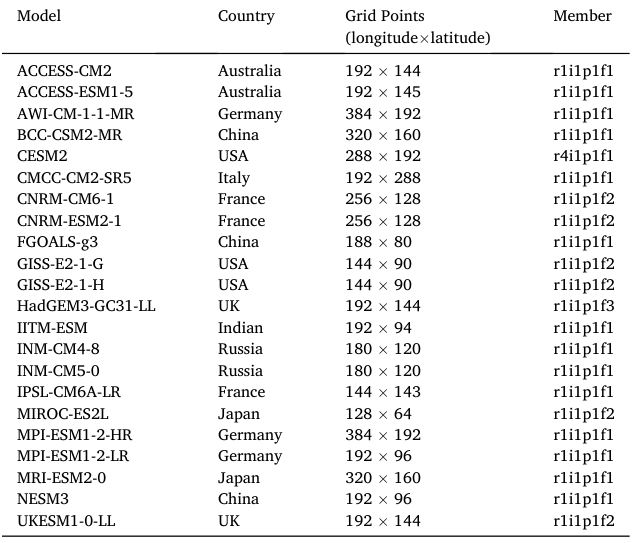
本研究使用的 CMIP6 模式信息。表中列出模式名称、国家、水平分辨率及本研究采用的集合成员。
| 模式 Model | 国家 Country | 格点（经度 × 纬度） Grid points | 集合成员 Member |
|---|---|---|---|
| ACCESS-CM2 | 澳大利亚 Australia | 192 × 144 | r1i1p1f1 |
| ACCESS-ESM1-5 | 澳大利亚 Australia | 192 × 145 | r1i1p1f1 |
| AWI-CM-1-1-MR | 德国 Germany | 384 × 192 | r1i1p1f1 |
| BCC-CSM2-MR | 中国 China | 320 × 160 | r1i1p1f1 |
| CESM2 | 美国 USA | 288 × 192 | r4i1p1f1 |
| CMCC-CM2-SR5 | 意大利 Italy | 192 × 288 | r1i1p1f1 |
| CNRM-CM6-1 | 法国 France | 256 × 128 | r1i1p1f2 |
| CNRM-ESM2-1 | 法国 France | 256 × 128 | r1i1p1f2 |
| FGOALS-g3 | 中国 China | 188 × 80 | r1i1p1f1 |
| GISS-E2-1-G | 美国 USA | 144 × 90 | r1i1p1f2 |
| GISS-E2-1-H | 美国 USA | 144 × 90 | r1i1p1f2 |
| HadGEM3-GC31-LL | 英国 UK | 192 × 144 | r1i1p1f3 |
| IITM-ESM | 印度 Indian | 192 × 94 | r1i1p1f1 |
| INM-CM4-8 | 俄罗斯 Russia | 180 × 120 | r1i1p1f1 |
| INM-CM5-0 | 俄罗斯 Russia | 180 × 120 | r1i1p1f1 |
| IPSL-CM6A-LR | 法国 France | 144 × 143 | r1i1p1f1 |
| MIROC-ES2L | 日本 Japan | 128 × 64 | r1i1p1f2 |
| MPI-ESM1-2-HR | 德国 Germany | 384 × 192 | r1i1p1f1 |
| MPI-ESM1-2-LR | 德国 Germany | 192 × 96 | r1i1p1f1 |
| MRI-ESM2-0 | 日本 Japan | 320 × 160 | r1i1p1f1 |
| NESM3 | 中国 China | 192 × 96 | r1i1p1f1 |
| UKESM1-0-LL | 英国 UK | 192 × 144 | r1i1p1f2 |
TS ratio 定义为1980–1994年期间 TP 月平均地表温度相对于全球平均值的比值。
TS ratio is defined as the ratio of the TP monthly mean surface temperature relative to the global mean during 1980–1994.
为获得可靠的参考 TS 比率，评估了三套全球再分析数据集，并以 TP 上的一个观测型数据集作为评估基准：ERA5(Mu˜noz-Sabater et al., 2021)，由 ECMWF 生成的高分辨率仅陆地再分析资料，对陆地表面过程具有更好的表征；The Modern-Era Retrospective Analysis for Research and Applications, Version 2(MERRA2)(Gelaro et al., 2017)，一种 NASA 全球再分析资料，吸收了广泛的卫星和原位观测，并侧重于能量和水循环的一致性；Global Land Data Assimilation System, Version 2.2(GLDAS2.2)(Rodell et al., 2004)，一种陆地数据同化系统，整合卫星和地面观测，以提供物理一致的陆地表面状态和通量。
To obtain reliable reference TS ratios, three global reanalysis datasets are evaluated, using an observation-based dataset over the TP as the evaluation benchmark: ERA5 (Mu˜noz-Sabater et al., 2021), a high-resolution landonly reanalysis produced by ECMWF with improved representation of land surface processes; The Modern-Era Retrospective Analysis for Research and Applications, Version 2 (MERRA2) (Gelaro et al., 2017), a NASA global reanalysis that assimilates a wide range of satellite and in situ observations with a focus on energy and water cycle consistency; Global Land Data Assimilation System, Version 2.2 (GLDAS2.2) (Rodell et al., 2004), a land data assimilation system that integrates satelliteand ground-based observations to provide physically consistent land surface states and fluxes.
在这些数据集中，MERRA2 和 ERA5 提供全球覆盖，GLDAS2.2 覆盖除南极洲外的全球陆地区域。
Among these datasets, MERRA2, ERA5 provides global coverage, GLDAS2.2 covers global land areas excluding Antarctica.
中国国家地面气象站日基本气象要素数据集(Version 3.0)提供经过质量控制的国家气象站网日观测，并作为评估再分析地表温度的原位参考资料。
The China National Surface Meteorological Station Daily Basic Meteorological Elements Dataset (Version 3.0) provides qualitycontrolled daily observations from the national meteorological station network and is used as an in situ reference for evaluating the reanalysis surface temperatures.
中国日尺度格点气象数据集(CDMet)(Zhang et al., 2024)是一个覆盖中国的日尺度格点气象数据集，基于699个站点观测，采用薄板样条和随机森林插值构建，并已利用独立观测和现有产品进行验证。
The Daily Gridded Meteorological Dataset for China (CDMet) (Zhang et al., 2024) is a China-wide daily gridded meteorological dataset derived from observations at 699 stations using thin-plate spline and random forest interpolation, and validated against independent observations and existing products.
站点观测和 CDMet 一并被用作评估再分析产品的参考数据集。
Together, the station observations and CDMet are adopted as the reference datasets for evaluating the reanalysis products.
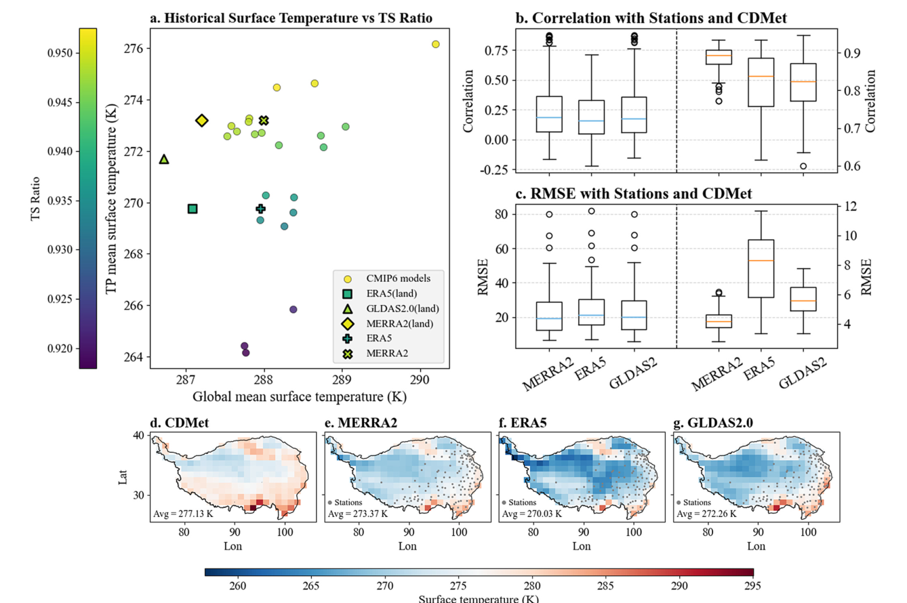
图 1｜Figure 1
图 1。
Fig. 1.
TS 比率的定义及再分析数据集的评估。
TS ratio definition and evaluation of reanalysis datasets.
TS 比率表示历史时期青藏高原（TP）平均地表温度与全球平均地表温度之间的比值。a，基于 2000–2014 年月数据，CMIP6 模型和再分析数据集中地表温度（全球和青藏高原）与 TS 比率之间的关系。b-c，2000–2014 年期间，MERRA2、ERA5 和 GLDAS2.0 的青藏高原地表温度相对于气象站观测和 CDMet 的月平均相关系数及均方根误差（RMSE）。
TS ratio represents the ratio between TP-mean and global-mean surface temperature during the historical period. a, Relationships between surface temperature (global and Tibetan Plateau) and the TS ratio across CMIP6 models and reanalysis datasets based on monthly data for 2000–2014. b-c, Monthly mean correlation coefficients and RMSEs of Tibetan Plateau surface temperature from MERRA2, ERA5, and GLDAS2.0 relative to meteorological station observations and CDMet during 2000–2014.
在每个面板中，左侧三个箱线图（蓝色中位数线）均以气象站观测为参照进行评估，而右侧三个箱线图（橙色中位数线）则以 CDMet 为参照进行评估。d-g，2000–2014 年期间 CDMet、MERRA2、ERA5 和 GLDAS2.0 的青藏高原月平均地表温度空间分布。
In each panel, the three boxplots on the left (blue median lines) are evaluated against meteorological station observations, whereas the three boxplots on the right (orange median lines) are evaluated against CDMet. d-g, Spatial distributions of monthly mean Tibetan Plateau surface temperature from CDMet, MERRA2, ERA5, and GLDAS2.0 during 2000–2014.
面板 e–g 中的灰点表示气象站位置，每个面板左下角给出了各数据集的区域平均地表温度。
Gray dots in panels e–g indicate the locations of meteorological stations, and the regional mean surface temperature of each dataset is shown in the lower-left corner of each panel.
（有关本图图例中颜色引用的说明，请参阅本文的网络版。）
(For interpretation of the references to colour in this figure legend, the reader is referred to the web version of this article.)
2.2 涌现约束方法｜Emergent constraint methods
EC 方法通过识别多个模式中可观测历史变量(x)与未来气候变量(y)之间的线性关系，降低未来气候预估的不确定性(Shiogama et al., 2022)。
The EC method reduces uncertainty in future climate projections by identifying linear relationships between observable historical variables (x) and future climate variables (y) across multiple models (Shiogama et al., 2022).
由于观测数据的误差通常低于模式模拟，该方法通过线性关系将观测值(x0)及其相关不确定性(通常以1σ表示)映射为未来预测(y)。
Since observational data typically have lower error than model simulations, this method maps the observed values (x0) and their associated uncertainties (usually represented as 1σ) to future predictions (y) through the linear relationship.
通过纳入回归模型的预测误差，该方法可提供更准确且不确定性更低的未来气候预估(Cai et al., 2025)。
By incorporating the predictive errors of the regression model, the method provides more accurate future climate projections with reduced uncertainty (Cai et al., 2025).
在本研究中，x 表示1980年至1995年 TP 地表温度与全球平均地表温度的比值，而 y 指 TA 的幅度以及各种辐射反馈机制对增暖的贡献。
In this study, x represents the ratio of the TP's surface temperature to global mean surface temperature from 1980 to 1995, while y refers to the extent of TA and the contribution of various radiative feedback mechanisms to warming.
该涌现约束关系由对多个模式实施最小二乘线性回归得到：
This EC relationship is derived through a least-squares linear regression applied to multiple models:
其中，a 和 b 分别表示斜率和截距；基于 yn 和 xn 的线性回归函数 f(x) 由 a 和 b 确定。
Here, a and b represent the slope and intercept, respectively, and the linear regression function f(x), based on yn and xn, is defined by a and b.
下标 n 表示不同模式。
The subscript n denotes different models.
回归的预测误差（σy）按下式（2）计算：
The predictive error of the regression (σy) is calculated using the following formula (2):
其中，N 表示模式数量；下标 n 表示不同模式，x 表示模式平均值。
Here, N represents the number of models, with the subscript n indicating different models, and x denotes the model mean.
最小二乘误差（s²）和 xn 的标准差（σx）按下列公式计算：
The least-squares error (s²) and the standard deviation of xn (σx) are calculated using the following formulas:
因此，可通过引入观测变量 x0，利用式（1）将 y 的原始预测调整为 y0：
Therefore, Eq. (1) can be used to adjust the raw predictions of y to y0 by incorporating the observed variable x0:
将 x = x0 代入式(2)，即可获得针对 x 调整后的回归预测误差。
By substituting x = x0 into Eq. (2), the regression predictive error adjusted for x can be obtained.
原始公式｜Original equations
数学符号和排版保留自已核验的出版社 PDF；变量释义见相邻中英对照正文。
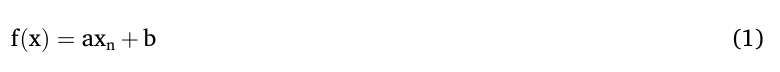
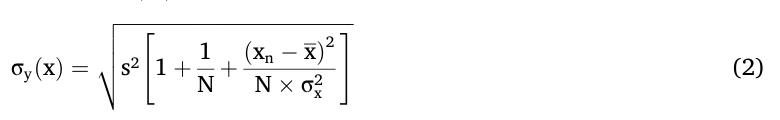
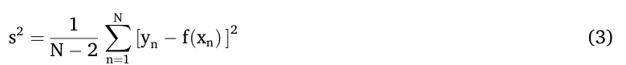
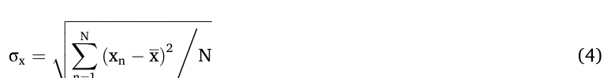
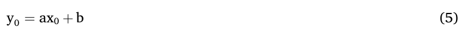
2.3 TA 指数（ITA）｜TA Index (ITA)
本研究采用青藏高原增温放大指数（ITA）——一个与 TA 等价的指标——来分析 CMIP6 模型中预估 TA 所涉及的机制。
In this study, we use the TP Amplification Index (ITA), an indicator equivalent to TA, to analyze the mechanisms underlying the projected TA in CMIP6 models.
ITA 源自一个纳入辐射强迫、反馈过程和大气热输送（AHT）的能量平衡框架；已有研究表明，该指数能够有效刻画北极增温放大的幅度（Zhou et al., 2024a）。
ITA is derived from an energy balance framework that incorporates radiative forcing, feedback processes, and atmospheric heat transport (AHT), and has been demonstrated to effectively capture the magnitude of Arctic amplification (Zhou et al., 2024a).
ITA 的一般表达式为：
The general formulation of ITA is expressed as:
其中，ΔTT 表示青藏高原上的增温，ΔTG 表示全球平均增温；a 为 AHT 对全球平均增温的敏感度，b 表示与青藏高原温度变化相关的 AHT 负反馈；λT 和 λG 分别为青藏高原和全球的总反馈参数；γ 为青藏高原与全球之间的辐射强迫比值，其常数值为 0.64。
Here, ΔTT represents the warming over the TP, and ΔTG denotes the global mean warming; a is the sensitivity of AHT to global mean warming, and b represents the negative feedback of AHT associated with TP temperature changes; λT and λG are the total feedback parameters for the TP and the globe, respectively; and γ is the ratio of radiative forcing between the TP and the globe, with a constant value of 0.64.
在式（6）中，项 λT − γλG 表示 ITA 内的局地反馈过程，其可进一步分解为：
In Eq. (6), the term λT − γλG represents local feedback processes within ITA, which can be further decomposed as:
式（7）右侧各项依次对应普朗克反馈、垂直递减率反馈、水汽反馈、反照率反馈、云反馈和净地表热通量对 TA（即 ITA）的贡献。
The terms on the right-hand side of Eq. (7) correspond, in order, to the contributions of the Planck feedback, lapse-rate feedback, water-vapor feedback, albedo feedback, cloud feedback, and net surface heat flux to TA (equivalent to ITA).
λT_i 和 λG_i 分别表示青藏高原和全球的反馈参数，采用 Pendergrass et al.（2018）开发的辐射核方法计算。
λT_i and λG_i denote the feedback parameters over the TP and the globe, respectively, which are calculated using the radiative kernel method developed by Pendergrass et al. (2018).
γ 由 2 × CO₂ 辐射强迫的空间分布导出（Huang et al., 2016）。
γ is derived from the spatial pattern of 2 × CO₂ radiative forcing (Huang et al., 2016).
下文介绍估算大气热输送参数（a 和 b）及辐射反馈参数的方法。
The procedures used to estimate the atmospheric heat transport parameters (a and b) and the radiative feedback parameters are described below.
原始公式｜Original equations
数学符号和排版保留自已核验的出版社 PDF；变量释义见相邻中英对照正文。
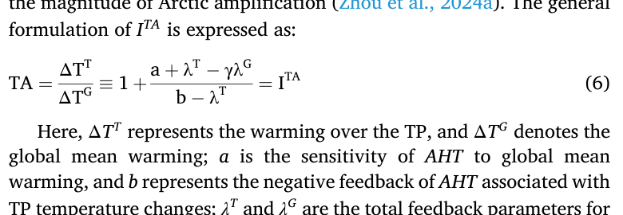
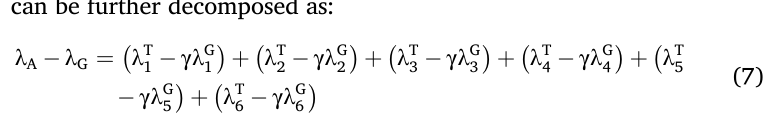
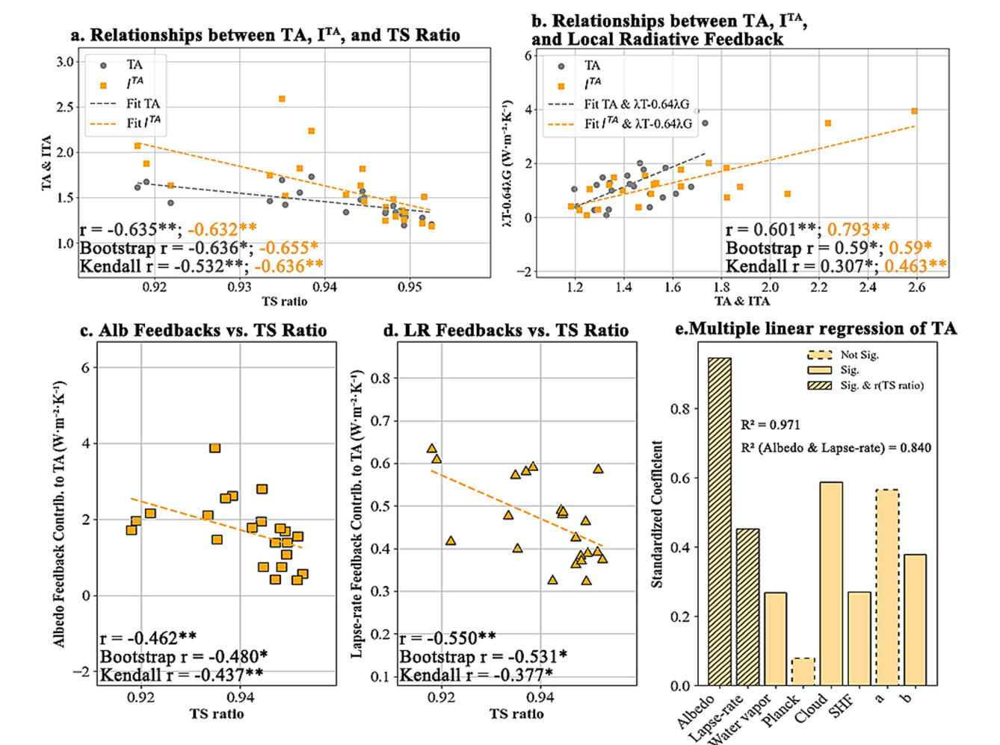
图 3｜Figure 3
图 3。
Fig. 3.
TA 指数（ITA）的构建及对 TP 温度放大（TA）有贡献的机制。a，CMIP6 模型间 TA、由物理分解框架导出的 ITA 与历史 TS 比率之间的关系。b，模型间 ITA 框架中的局地辐射反馈贡献项（ λT − γλG ）与 TA 的关系。c-d，反照率（Alb）反馈（c）和垂直递减率（LR）反馈（d）对 TA 的贡献与历史 TS 比率之间的关系。e，各反馈组分对 TA 贡献的多元线性回归分析；y 轴表示标准化回归系数。
Construction of the TA Index (ITA ) and mechanisms contributing to TA over the TP. a, Relationships among TA, the ITA derived from the physical decomposition framework, and historical TS ratio across CMIP6 models. b, Relationship between the local radiative feedback contribution term ( λT − γλG ) in the ITA framework and TA across models. c-d, Relationships between the contributions of albedo (Alb) feedback (c) and lapse-rate (LR) feedback (d) to TA and historical TS ratio. e, Multiple linear regression analysis of the contributions of individual feedback components to TA; the y-axis represents standardized regression coefficients.
局地辐射反馈项（ λT − γλG ）、反照率反馈和垂直递减率反馈的单位均为 W m− 2 K− 1 ，表示单位温度变化（K）对应的辐射通量变化（W m− 2 ）。
The units of the local radiative feedback term ( λT − γλG ), albedo feedback, and lapse-rate feedback are W m− 2 K− 1 , representing the change in radiative flux (W m− 2 ) per unit temperature change (K).
2.3.1 青藏高原大气热输送的变化｜Changes in atmospheric heat transport
青藏高原的能量平衡受大气热输送变化（ΔAHT）的调制。
The energy balance of the Tibetan Plateau is modulated by changes in atmospheric heat transport (ΔAHT).
鉴于大气能量平衡在相对较短的时间尺度上即可建立，ΔAHT 可由大气能量辐合的面积加权积分估算；该辐合定义为净地表能量通量与大气顶（TOA）净能量通量之差，表示为：
Given that atmospheric energy balance is established on relatively short timescales, ΔAHT can be estimated by the area-weighted integration of atmospheric energy convergence, defined as the difference between net surface energy flux and net top-of-atmosphere (TOA) energy flux, as expressed by:
ΔAHT 可表示为全球平均地表温度变化（ΔTG）和经向温度梯度（ΔTT − ΔTG）的函数：
ΔAHT is expressed as a function of the global mean surface temperature change (ΔTG) and the meridional temperature gradient (ΔTT − ΔTG):
对式（9）改写可得：
Rewriting Eq. (9) yields:
原始公式｜Original equations
数学符号和排版保留自已核验的出版社 PDF；变量释义见相邻中英对照正文。
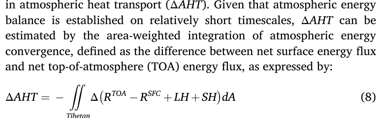
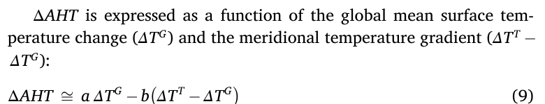
2.3.2 辐射核法量化的反馈参数｜Feedback parameters via radiative kernels
反馈参数 λi 采用辐射核方法计算：
Feedback parameters λi were computed using the radiative kernel method:
其中，ΔRTOA i 表示由反馈变量变化引起的年际大气顶（TOA）辐射异常，Δ T 为年际平均地表温度变化。
Here, ΔRTOA i denotes the interannual top-of-atmosphere (TOA) radiative anomaly induced by variations in the feedback variable, and Δ T is the interannual mean surface temperature change.
辐射核描述大气顶辐射对地表反照率、温度和比湿等关键反馈因子扰动的空间和时间敏感性。
Radiative kernels describe the spatial and temporal sensitivity of TOA radiation to perturbations in key feedback factors such as surface albedo, temperature, and specific humidity.
对于给定反馈 i，相应的辐射通量变化 ΔRTOA i 通过将该反馈变量的异常场与其辐射核相乘，并对乘积进行垂直积分获得。
For a given feedback i, the corresponding radiative flux change ΔRTOA i is obtained by multiplying the anomaly field of the feedback variable with its radiative kernel and integrating the product vertically.
各反馈分量的估算如下：普朗克反馈由地表增温引起的大气顶辐射增量确定，并假设该增温在对流层中垂直传播。
The estimation of each feedback component is as follows: Planck feedback is determined from the TOA radiative increment induced by surface warming, assuming vertical propagation through the troposphere.
垂直递减率反馈由温度廓线相对于均匀垂直增温的偏差导出，表征大气稳定度变化的辐射效应。
Lapse-rate feedback is derived from deviations of the temperature profile relative to uniform vertical warming, representing the radiative effect of changes in atmospheric stability.
水汽反馈通过将比湿异常与相应水汽核相乘获得，反映湿度变化对红外辐射的调制。
Water vapor feedback is obtained by multiplying specific humidity anomalies with the corresponding water vapor kernel, reflecting the modulation of infrared radiation by humidity changes.
反照率反馈通过诊断向下和向上短波辐射的变化以推断地表反照率扰动，随后将其与短波核结合以计算大气顶响应。
Albedo feedback is diagnosed from changes in downward and upward shortwave radiation to infer surface albedo perturbations, which are then combined with the shortwave kernel to calculate the TOA response.
云反馈首先通过计算云辐射效应变化（ΔCRE）来量化，随后利用全天空核与晴空核之差扣除非云过程的影响，从而分离出云的特异贡献。
Cloud feedback is quantified by first computing the change in cloud radiative effect (ΔCRE) and then isolating the cloud-specific contribution by subtracting the influence of non-cloud processes, achieved through the difference between all-sky and clear-sky kernels.
原始公式｜Original equations
数学符号和排版保留自已核验的出版社 PDF；变量释义见相邻中英对照正文。
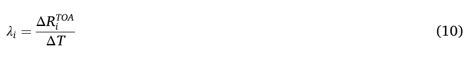
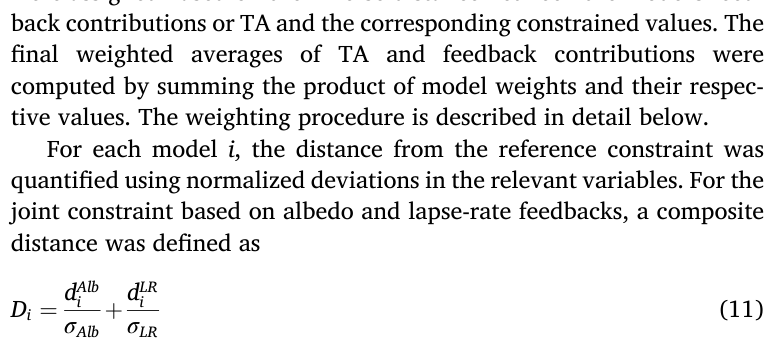
2.4 统计分析与加权平均｜Statistical analysis and weighted averaging
TS ratio、TA 与 ITA 各分量之间的关系采用 Pearson 和 Kendall 相关系数进行评估。
Relationships among TS ratio, TA, and ITA components were assessed using Pearson and Kendall correlation coefficients.
Pearson 相关的显著性及其置信区间通过自助重采样（10,000 次迭代）估计，从而为变量间关系提供稳健验证（Zoubir and Iskandler, 2007）。
The significance of Pearson correlations and their confidence intervals were estimated via bootstrap resampling (10,000 iterations), providing robust validation of inter-variable relationships (Zoubir and Iskandler, 2007).
为评估各 ITA 分量对 TA 的相对贡献，我们采用多元线性回归，并使用标准化回归系数来量化各反馈项在解释模式间变异中的重要性。
To evaluate the relative contribution of each ITA component to TA, we applied multiple linear regression and used the standardized regression coefficients to quantify the importance of individual feedback terms in explaining inter-model variability.
在实施 EC 后，我们采用加权多模式平均方法，以检验基于反馈和直接约束所得 TA 估计之间的一致性，并推导受约束 TA 的空间分布。
Following the implementation of the EC, we applied a weighted multi-model averaging approach to verify the consistency between TA estimates derived from feedback-based and direct constraints, and to derive the spatial distribution of constrained TA.
对于每个模型，根据该模型的反馈贡献或 TA 与相应受约束值之间的逆距离赋予权重。
For each mode, weights were assigned based on the inverse distance between the model's feedback contributions or TA and the corresponding constrained values.
TA 和反馈贡献的最终加权平均值通过对模型权重与其相应数值之乘积求和计算。
The final weighted averages of TA and feedback contributions were computed by summing the product of model weights and their respective values.
下文将详细说明加权过程。
The weighting procedure is described in detail below.
对于每个模型 i，采用相关变量的归一化偏差来量化其与参考约束之间的距离。
For each model i, the distance from the reference constraint was quantified using normalized deviations in the relevant variables.
对于基于反照率和垂直递减率反馈的联合约束，复合距离定义为 Di = dAlb i σAlb + dLR i σLR (11)，其中 dAlb i 和 dLR i 表示反照率和垂直递减率反馈相对于参考值的偏差，σAlb 和 σLR 表示其相关不确定性。
For the joint constraint based on albedo and lapse-rate feedbacks, a composite distance was defined as Di = dAlb i σAlb + dLR i σLR (11) where dAlb i and dLR i denote the deviations of the albedo and lapse-rate feedbacks from the reference values, and σAlb and σLR represent their associated uncertainties.
随后采用指数衰减函数赋予模式权重：
Model weights were then assigned using an exponential decay function:
该函数对更接近约束的模式赋予更高权重。
This function gives higher weights to models closer to the constraint.
约束后的 TA 按加权平均计算为：
The constrained TA was calculated as the weighted mean:
除基于反馈的加权策略外，我们还根据由约束得到的 TA 参考值应用了一种直接加权方法。
In addition to the feedback-based weighting strategy, we further applied a direct weighting approach based on the TA reference value obtained from the constraint.
据此赋予模型权重，并用于计算加权多模式平均值。
Model weights were assigned accordingly and used to derive a weighted multi-model mean.
对于每个模式 i，定义归一化 TA 距离为：
For each model i, a normalized TA distance was defined as:
其中，TAref 表示 TA 的约束参考值，σTA 表示其相关不确定性。
where TAref denotes the constrained reference value of TA and σTA represents its associated uncertainty.
随后采用与基于反馈方法相同的指数衰减函数赋予模型权重，并据此计算加权多模式平均 TA。
Model weights were then assigned using the same exponential decay function as in the feedback-based approach, and the weighted multi-model mean TA was calculated accordingly.
原始公式｜Original equations
数学符号和排版保留自已核验的出版社 PDF；变量释义见相邻中英对照正文。
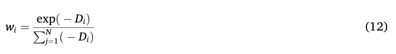
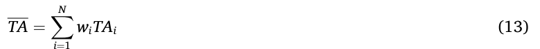
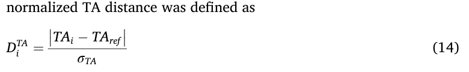
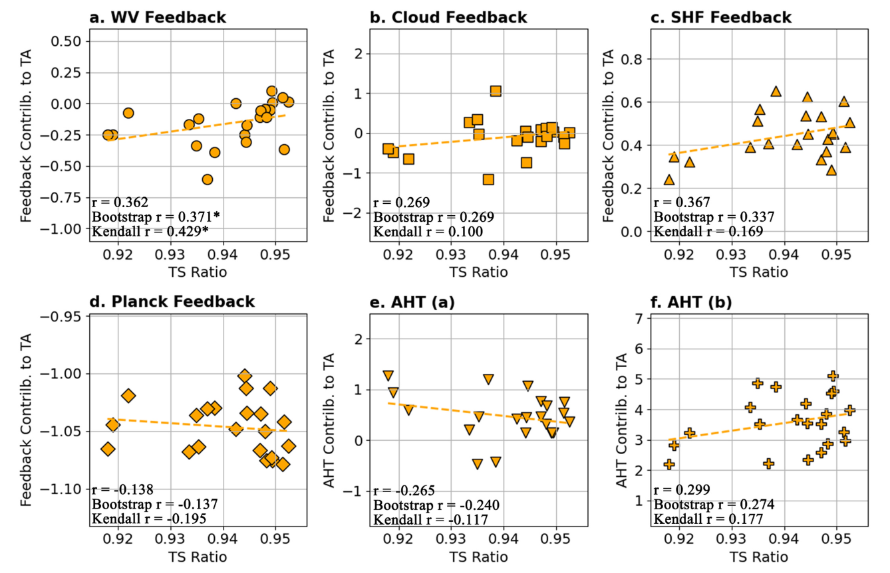
图 4｜Figure 4
图 4。
Fig. 4.
历史 TS 比率与各反馈及大气热输送（AHT）对青藏高原（TP）温度放大（TA）贡献之间的关系。
Relationships between historical TS ratio and individual feedback and atmospheric heat transport (AHT) contributions to Tibetan Plateau (TP) temperature amplification (TA).
TS 比率表示历史时期（1980–1994）TP 平均地表温度与全球平均地表温度之间的比值。
TS ratio represents the ratio between TP-mean and global-mean surface temperature during the historical period (1980–1994).
各过程对 TA 的贡献由未来时期（SSP585 情景下 2085–2099 年）的 ITA 分解框架导出。a-f，展示 TS 比率与水汽反馈（a）、云反馈（b）、地表热通量反馈（c）、普朗克反馈（d）以及 AHT 参数 a（e）和 b（f）贡献之间关系的散点图。
The contributions of individual processes to TA are derived from the ITA decomposition framework for the future period (2085–2099 under the SSP585 scenario). a-f, Scatter plots showing the relationships between TS ratio and the contributions of water vapor feedback (a), cloud feedback (b), surface heat flux feedback (c), Planck feedback (d), and AHT parameters a (e) and b (f).
反馈贡献和 AHT 项均以 W m− 2 K− 1 表示。
Feedback contributions and AHT terms are expressed in W m− 2 K− 1 .
3. 结果｜Results
3.1 模拟的 TS 比值偏差会导致 TA 高估｜Simulated TS-ratio biases drive TA overestimation
本文将TA定义为TP未来地表温度增幅与相应全球平均增幅之比；温度增幅均按SSP585情景下21世纪末期（2085–2099）相对于历史基准期（1980–1994）的差值计算。
TA is defined here as the ratio of the projected surface temperature increase over the TP to the corresponding global mean increase, calculated as the difference between the late 21st century (2085–2099) under SSP585 and the historical baseline (1980–1994).
为考虑模拟全球平均地表温度的模式间差异（图1a），我们将历史地表温度比值（TS ratio）定义为一个无量纲归一化指数，即TP平均地表温度与同期全球平均地表温度之比；二者均以开尔文计，并在1980–1994年期间取平均。
To account for intermodel differences in simulated global mean surface temperature (Fig. 1a), we define a historical surface temperature ratio (TS ratio) as a dimensionless normalized index, given by the ratio of the TP mean surface temperature to the contemporaneous global mean surface temperature, both in Kelvin, averaged over 1980–1994.
该定义有效避免了因模拟全球平均地表温度偏差而导致的模式间比较不一致性。
This definition effectively avoids inconsistencies in inter-model comparisons arising from biases in simulated global mean surface temperature.
进一步分析表明，在模式和再分析产品中，模拟TP地表温度的离散度均显著大于全球平均地表温度的离散度（图1a）。
Further analysis shows that, in both models and reanalysis products, the spread in simulated TP surface temperature is substantially larger than that in global mean surface temperature (Fig. 1a).
因此，TS ratio的模式间变化主要由模拟TP地表温度的差异所主导（r = 0.98, P < 0.01），而非由全球平均地表温度的差异所主导（r = 0.04, P > 0.05）。
Consequently, inter-model variations in TS ratio are dominated by differences in simulated TP surface temperature (r = 0.98, P < 0.01), rather than by differences in global mean surface temperature (r = 0.04, P > 0.05).
由于目前尚无可用于直接构建TS ratio的可靠观测型全球地表温度产品，我们以气象站观测和基于观测的TP地表温度数据集CDMet为参考数据集，对三套全球再分析数据集（ERA5、GLDAS2.0和MERRA2）进行评估。
As no reliable observation-based global surface temperature product is currently available to directly construct TS ratio, we evaluate three global reanalysis datasets (ERA5, GLDAS2.0, and MERRA2) using both meteorological station observations and the observation-based TP surface temperature dataset CDMet as reference datasets.
结果表明，MERRA2在空间相关性和绝对误差两方面均表现最佳（图1b–g），因此被用于推导参考TS ratio值（0.949）。
The results indicate that MERRA2 performs best in terms of both spatial correlation and absolute error (Fig. 1 b-g), and is therefore used to derive the reference TS ratio value (0.949).
多模式平均预估了显著的TA（图2a），其幅度约为全球平均温度增幅的1.44倍。
The multi-model mean projects a marked TA (Fig. 2a), with a magnitude approximately 1.44 times the global mean temperature increase.
最强增温出现在喜马拉雅山西部和念青唐古拉山北部；既有研究表明，在这些地区，大幅积雪减少所驱动的增强反照率反馈对区域增温放大起主导作用（Hu et al., 2023b; Pepin et al., 2019）。
The strongest warming occurs in the western Himalayas and northern Nyenchen Tanglha Mountains, regions where previous studies have shown that enhanced albedo feedbacks driven by substantial snow cover reduction play a dominant role in amplifying regional warming (Hu et al., 2023b; Pepin et al., 2019).
积雪减少会降低地表反照率、增加净短波辐射并加速融雪开始，从而建立正反馈环，进一步强化地表增温。
The snow loss lowers surface albedo, increases net shortwave radiation, and accelerates melt onset, establishing a positive feedback loop that further reinforces surface warming.
与MERRA2相比，模式模拟的TS ratio在大多数TP网格点上表现出普遍的冷偏差（图2b），平均约为0.4%（相对MERRA2低1.13 K）。
Compared with MERRA2, the simulated TS ratio from models exhibits a pervasive cold bias across most TP grid cells (Fig. 2b), averaging about 0.4% (1.13 K lower relative to MERRA2).
超过一半的网格点呈现负偏差（图2b中的黑点），表明该偏差在模式中较为普遍。
More than half of the grid cells show negative biases (black dots in Fig. 2b), indicating that this bias is widespread among models.
已有研究指出，此类冷偏差同样受反照率相关反馈控制，并倾向于随海拔升高而增强（Wu et al., 2024）。
It has been suggested that such cold biases are also governed by albedo-related feedbacks and tend to intensify with elevation (Wu et al., 2024).
模式模拟的过多积雪可能会降低地表净辐射并抑制增温，从而延长积雪持续时间，并通过反馈机制强化冷偏差。
Excessive snow cover simulated by the models likely reduces surface net radiation and suppresses warming, thereby prolonging snow persistence and reinforcing the cooling bias through feedback mechanisms.
在各模式间，未来TA的幅度与模拟的TS ratio呈显著负相关（图2c、d）。
Across models, the magnitude of future TA shows a significant negative correlation with the simulated TS ratio (Fig. 2c, d).
具体而言，TP气候态温度较低的模式倾向于在未来增温条件下预估更强的TA。
Specifically, models with lower climatological temperature over the TP tend to project stronger TA under future warming.
大多数网格点呈现负相关，其中许多达到统计显著水平，区域平均相关系数达到−0.635（P < 0.05）。
Most grid cells display negative correlations, many of which are statistically significant, and the regional mean correlation reaches −0.635 (P < 0.05).
这种反向关系可能反映了地表能量平衡反馈的作用：在辐射强迫增加的条件下，冷偏差更强的模式可能通过被夸大的雪—反照率反馈或其他反馈机制预估更大的未来增温放大。
This inverse relationship likely reflects the role of surface energy balance feedbacks, whereby models with stronger cold biases may project larger future warming amplification through exaggerated snow-albedo feedbacks or other feedback mechanisms under increased radiative forcing.
若假定这种具有物理基础的联系是稳健的，则普遍存在的TS ratio冷偏差意味着对集合平均TA的系统性高估。
Assuming that this physically grounded linkage is robust, the widespread TS ratio cold bias implies a systematic overestimation of the ensemble-mean TA.
考虑这一偏差—放大关系，为约束未来TA预估并改进TP区域气候风险评估提供了一条潜在途径。
Accounting for this bias-amplification relationship provides a potential avenue to constrain future TA projections and improve regional climate risk assessments over the TP.
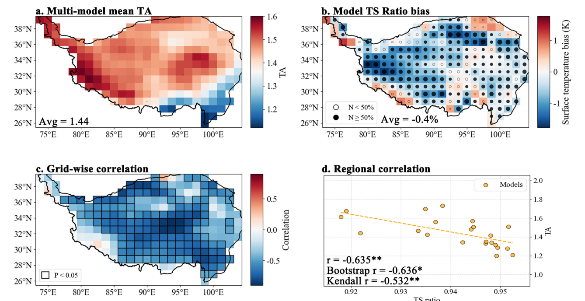
图 2｜Figure 2
图 2。
Fig. 2.
青藏高原（TP）上的 TS 比率冷偏差及其与未来温度放大（TA）的关系。a，SSP585 情景下 2085–2099 年期间 TP 上多模式集合平均 TA 的空间分布。
TS ratio cold bias over the TP and its relationship with future TA. a, Spatial distribution of the multi-model ensemble mean TA over the TP during 2085–2099 under the SSP585 scenario.
TA 定义为 TP 平均地表温度（TS）变化与全球平均 TS 变化的比值，两种变化均相对于历史时期（1980–1994）计算。b，相对于 MERRA2 再分析数据集的历史 TS 比率多模式集合平均偏差的空间分布。
TA is defined as the ratio of the TP-mean surface temperature (TS) change to the global-mean TS change, with both changes calculated relative to the historical period (1980–1994). b, Spatial distribution of the multi-model ensemble mean bias in historical TS ratio relative to the MERRA2 reanalysis dataset.
TS 比率定义为历史时期（1980–1994）TP 平均地表温度与全球平均地表温度之间的比值。
TS ratio is defined as the ratio between the TP-mean surface temperature and global-mean surface temperature during the historical period (1980–1994).
黑点表示超过半数 CMIP6 模型呈现负 TS 比率偏差的网格单元。c，在网格单元尺度上，CMIP6 模型间历史 TS 比率与未来 TA 的相关系数空间分布。d，在 TP 区域尺度上，历史 TS 比率与未来 TA 的关系。
Black dots indicate grid cells where more than half of the CMIP6 models exhibit negative TS ratio biases. c, Spatial distribution of the correlation coefficients between historical TS ratio and future TA across CMIP6 models at the grid-cell scale. d, Relationship between historical TS ratio and future TA at the TP regional scale.
每个点代表一个 CMIP6 模型，虚线表示线性回归关系。
Each dot represents an individual CMIP6 model, and the dashed line indicates the linear regression relationship.
左下角给出了相关系数，星号（*）表示在 P < 0.05 水平上具有统计显著性。
Correlation coefficients are shown in the lower-left corner, and an asterisk (*) denotes statistical significance at P < 0.05.
3.2 TS 比值通过反照率和垂直递减率反馈影响 TA｜Albedo and lapse-rate pathways
为考察TS ratio与未来TA之间显著负相关背后的物理机制，我们采用TP放大指数（ITA）。
To examine the physical mechanisms underlying the significant negative correlation between TS ratio and future TA, we use the TP Amplification Index (ITA).
Zhou et al. (2024a)表明，北极放大程度可通过一个双箱模型加以理解，并可由包含反馈参数和大气热输送动力学等物理因素的简单函数刻画（见方法）。
Ref. (Zhou et al., 2024a), showed that the degree of Arctic Amplification can be understood through a two-box model and captured by a simple function of physical factors including feedback parameters and dynamics of atmospheric heat transport (see Methods).
在此，我们将该指数应用于TP区域，并构建了ITA。
Here, we apply this index to the TP region and develop a ITA.
ITA与TA高度一致（r = 0.902, P < 0.01）；在各模式间，ITA也与TS ratio呈显著负相关（r = −0.632, P < 0.01），与TA和TS ratio之间的关系高度吻合（图3a、2d）。
ITA is highly consistent with TA (r = 0.902, P < 0.01), and across models, ITA also shows a significant negative correlation with TS ratio (r = −0.632, P < 0.01), closely mirroring the relationship between TA and TS ratio (Figs. 3a, 2d).
这表明，分析ITA的组成部分及其与TS ratio的关系，或可揭示将TS ratio与未来增温放大联系起来的机制。
This indicates that analyzing the components of ITA and their relationships with TS ratio may reveal the mechanisms linking TS ratio to future warming amplification.
关于TA和北极放大的既有研究通常将增温放大归因于局地辐射反馈失衡与大气热输送机制的共同作用（Hu et al., 2023b; Zhou et al., 2024a）。
Previous studies on both TA and Arctic amplification generally attribute warming amplification to the combined effects of local radiative feedback imbalance and atmospheric heat transport mechanisms (Hu et al., 2023b; Zhou et al., 2024a).
基于ITA分解，我们发现，TA及其等效的ITA均与局地辐射反馈项（λT − γλG）呈显著正相关（图3b，r分别为0.601和0.793）；该项以W m−2 K−1为单位，表示局地辐射反馈对TA（ITA）的总贡献（见方法）。
Based on ITA decomposition, we find that both TA and its equivalent ITA are significantly positively correlated with the local radiative feedback term ( λT − γλG) (Fig. 3b, r = 0.601 and r = 0.793, respectively), which represents the total contribution of local radiative feedback to TA (ITA) in units of W m−2 K−1 (see Methods).
在TP内，反照率反馈和垂直递减率反馈主导局地辐射反馈对TA的贡献，且二者均与TS ratio呈显著相关（图3c–d），共同解释了大部分模式间TA变异（R2 = 0.840；图3e）。
Within the TP, albedo and lapse-rate feedbacks dominate the local radiative feedback contribution to TA, and both exhibit significant correlations with TS ratio (Figs. 3c-d), jointly explaining the majority of inter-model TA variability (R2 = 0.840; Fig. 3e).
相比之下，在当前框架下，其他反馈过程和大气热输送组分与TS ratio均未呈现显著相关（图4）；这可能反映了在气候模式中，地表温度异常对对流层和云特性的影响有限。
By contrast, other feedback processes and atmospheric heat transport components show no significant correlation with TS ratio within the current framework (Fig. 4), likely reflecting the limited influence of surface temperature anomalies on the troposphere and cloud properties in climate models.
既有研究表明，模式中对流层中上层湿度的变化主要受垂直输送和对流过程控制，而非直接由地表温度异常驱动（Colman and Soden, 2021）。
Previous studies have shown that variations in midand upper-tropospheric humidity in models are mainly controlled by vertical transport and convective processes, rather than being directly driven by surface temperature anomalies (Colman and Soden, 2021).
模式间对全球增温的云响应差异，很大程度上源于云相关参数化方案无法准确捕捉辐射过程与动力过程之间的复杂相互作用（Ceppi et al., 2017）。
Inter-model differences in cloud responses to global warming largely stem from the inability of cloud-related parameterization schemes to accurately capture the complex interactions between radiative and dynamical processes (Ceppi et al., 2017).
关于大气热输送，其对ITA的贡献难以得到稳健量化，因为与动力学相关的参数a和b难以精确估计（Zhou et al., 2024a）。
With respect to atmospheric heat transport, its contribution to ITA is difficult to robustly quantify, because the dynamically related parameters a and b are challenging to estimate precisely (Zhou et al., 2024a).
此外，研究表明，大气热输送主要受大尺度环流型控制（Goosse et al., 2018）。
Furthermore, studies have indicated that atmospheric heat transport is predominantly governed by large-scale circulation patterns (Goosse et al., 2018).
为进一步阐明TS ratio与TA之间显著负相关的物理机制，我们考察TS ratio如何通过反照率和垂直递减率反馈调制TA的强度（图5）。
To further elucidate the physical mechanisms underlying the significant negative correlation between TS ratio and TA, we examine how TS ratio modulates the intensity of TA through albedo and lapse-rate feedbacks (Fig. 5).
为便于说明，依据TS ratio值将模式划分为“冷模式”和“暖模式”（图5a、e），并对其关键能量过程进行比较分析，以揭示驱动模式间TA差异的机制。
For clarity, models are categorized into “cold models” and “warm models” based on TS ratio values (Fig. 5a, e), and a comparative analysis of their key energy processes is performed to reveal the mechanisms driving inter-model differences in TA.
与暖模式相比，冷模式在历史时期的TP积雪覆盖显著更高（图6a、b）。增强的积雪覆盖会增加对入射短波辐射的反射，从而导致显著更高的地表反照率（图5b）。
Compared with the warm models, the cold models exhibit substantially higher snow cover over the TP during the historical period (Fig. 6 a, b) The enhanced snow cover increases the reflection of incoming shortwave radiation, resulting in significantly higher surface albedo (Fig. 5b).
在这一基准状态下，随着未来气候变暖，冷模式经历更显著的融雪，导致地表反照率更大幅度地降低（图5c）。
Given this baseline state, as the climate warms in the future, cold models experience more pronounced snowmelt, leading to a greater reduction in surface albedo (Fig. 5c).
反照率更大的下降意味着地表吸收的短波辐射增加更强，从而增强反照率反馈对TA的正贡献（图5d）。
The larger decrease in albedo implies a stronger increase in absorbed shortwave radiation at the surface, thereby enhancing the positive contribution of albedo feedback to TA (Fig. 5d).
相反，初始反照率较低的暖模式呈现较弱的积雪变化，因此积雪损失和反照率降低对TA的贡献较小。
In contrast, the warm models, characterized by lower initial albedo, exhibit weaker snow changes and hence a smaller contribution of snow loss and albedo reduction to TA.
除积雪过程外，土地利用变化和植被动力学等因素也会影响地表反照率变化（Hou et al., 2025）。
In addition to snow processes, factors such as land-use change and vegetation dynamics can also influence surface albedo variations (Hou et al., 2025).
为进一步考察雪—反照率联系，我们分析了积雪覆盖、雪水当量和反照率变化之间的关系，以及它们与反照率反馈对TA贡献之间的相关性（图6c–f）。
To further examine the snow-albedo linkage, we investigated the relationships among snow cover, snow water equivalent, and changes in albedo, as well as their correlations with the albedo feedback contribution to TA (Fig. 6 c-f).
结果显示，未来积雪变化（包括积雪覆盖和雪水当量）与地表反照率变化及其对TA的反馈贡献变化之间存在显著正相关。
The results reveal significant positive correlations between future snow changes (including both snow cover and snow water equivalent) and variations in surface albedo and its feedback contribution to TA.
这表明，TP地表反照率的预估下降在很大程度上可归因于融雪加剧，而融雪是TA的一个正向贡献因素。
This indicates that the projected decline in surface albedo over the TP is largely attributable to intensified snowmelt, which acts as a positive contributor to TA.
转向垂直递减率反馈，冷模式呈现出与暖模式明显不同的大气垂直温度结构。
Turning to lapse-rate feedback, cold models exhibit distinctly different atmospheric vertical temperature structures from warm models.
与暖模式相比，TS ratio较低的模式在历史时期近地面与高空之间表现出更大的温度差，这表明TP上空大气稳定度更强、对流活动更弱，因而具有更大的垂直温度梯度（图5f）。
Compared with warm models, those with lower TS ratio display larger temperature differences between the near-surface and upper-air levels during the historical period, indicating stronger atmospheric stability and weaker convective activity over the TP, and consequently a larger vertical temperature gradient (Fig. 5f).
这种结构性差异在未来气候条件下仍然存在（图5g）。
This structural distinction persists under future climate conditions (Fig. 5g).
随着增温加剧，冷模式中的温度升高集中于近地面，而高层增温滞后，从而限制向上的热输送并进一步放大地表正反馈。
As warming intensifies, the temperature increase in cold models is concentrated near the surface, while upper-level warming lags, limiting upward heat transport and further amplifying surface positive feedbacks.
相应地，垂直递减率反馈在冷模式中对TA的贡献更强（图5h），进一步强化了TS ratio与TA之间的负相关。
Accordingly, the lapse-rate feedback contributes more strongly to TA in cold models (Fig. 5h), further reinforcing the negative correlation between TS ratio and TA.
总之，模式中的TS ratio主要通过调制反照率和垂直递减率反馈的贡献来调节TA。
In summary, the TS ratio in models regulates TA primarily by modulating the contributions of albedo and lapse-rate feedbacks.
在冷模式中，较低的模拟TS ratio会增强反照率和垂直递减率反馈对TA的预估正贡献，从而强化局地辐射反馈，并导致对未来TA的系统性高估。
In cold models, a lower simulated TS ratio enhances the projected positive contributions of albedo and lapse-rate feedbacks to TA, thereby intensifying local radiative feedbacks and leading to a systematic overestimation of future TA.
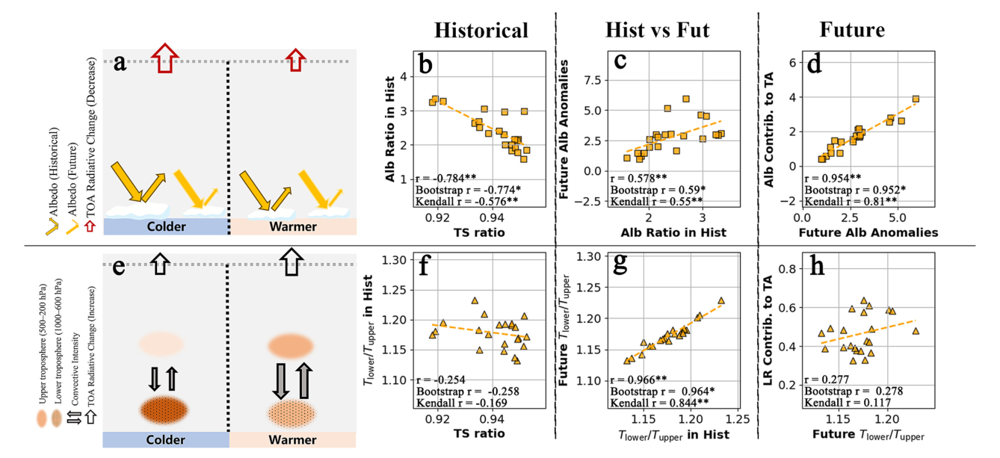
图 5｜Figure 5
图 5。
Fig. 5.
将历史 TS 比率与反照率和垂直递减率反馈对 TA 的贡献联系起来的机制。
Mechanisms linking historical TS ratio to albedo and lapse-rate feedback contributions to TA.
历史时期指 1980–1994 年期间的月平均状态，未来时期指 SSP585 情景下 2085–2099 年期间的月平均状态。
The historical period refers to the monthly mean state during 1980–1994, and the future period refers to the monthly mean state during 2085–2099 under the SSP585 scenario.
模型依据其历史 TS 比率值被划分为“冷模型”和“暖模型”。a，e，对与冷模型和暖模型相关的物理路径进行比较的示意图，展示历史 TS 比率差异如何通过反照率反馈（a）和垂直递减率反馈（e）影响 TA。b-d，通过反照率反馈将历史 TS 比率与未来 TA 联系起来的机制。b，历史时期历史 TS 比率与地表反照率之间的关系。c，历史地表反照率与未来时期地表反照率预估变化之间的关系。d，模型间地表反照率预估变化与反照率反馈对 TA 的贡献之间的关系（W m− 2 K− 1 ）。f-h，通过垂直递减率反馈将历史 TS 比率与未来 TA 联系起来的机制。f，历史时期历史 TS 比率与近地面—高空气温差之间的关系。g，历史与未来近地面—高空气温差之间的关系。h，模型间未来近地面—高空气温差与垂直递减率反馈对 TA 的贡献之间的关系（W m− 2 K− 1 ）。
Models are classified into “cold models” and “warm models” based on their historical TS ratio values. a, e, Schematic illustrations comparing the physical pathways associated with cold and warm models, showing how historical TS ratio differences influence TA through albedo feedback (a) and lapse-rate feedback (e). b-d, Mechanisms linking historical TS ratio to future TA through albedo feedback. b, Relationship between historical TS ratio and surface albedo during the historical period. c, Relationship between historical surface albedo and projected changes in surface albedo during the future period. d, Relationship between projected changes in surface albedo and the contribution of albedo feedback to TA across models (W m− 2 K− 1 ). f-h, Mechanisms linking historical TS ratio to future TA through lapse-rate feedback. f, Relationship between historical TS ratio and near-surface-upper-air temperature difference during the historical period. g, Relationship between historical and future near-surface-upper-air temperature differences. h, Relationship between future near-surface-upper-air temperature difference and the contribution of lapse-rate feedback to TA across models (W m− 2 K− 1 ).
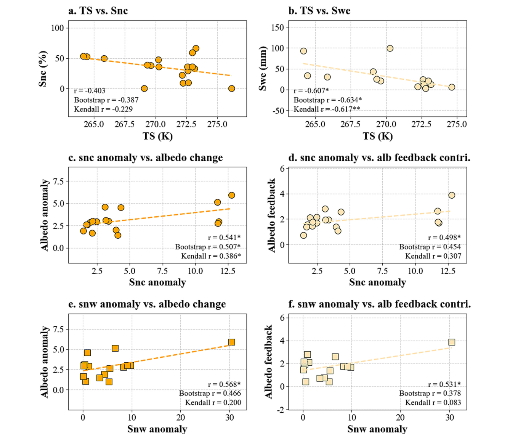
图 6｜Figure 6
图 6。
Fig. 6.
TP 上历史地表温度、积雪状况与雪—反照率反馈之间的关系。
Relationships among historical surface temperature, snow conditions, and snow–albedo feedback over the TP.
TS 表示地表温度，Snc 表示积雪覆盖率，Swe 表示雪水当量。a–b，CMIP6 模型间历史（1980–1994）月平均 TP 地表温度与历史 Snc（a）和 Swe（b）之间的关系。c-d，Snc 的未来变化与地表反照率变化（c）以及反照率反馈对 TA 的贡献（d）之间的关系。e–f，Swe 的未来变化与地表反照率变化（e）以及反照率反馈对 TA 的贡献（f）之间的关系。
TS represents surface temperature, Snc represents snow cover fraction, and Swe represents snow water equivalent. a–b, Relationships between historical (1980–1994) monthly mean TP surface temperature and historical Snc (a) and Swe (b) across CMIP6 models. c-d, Relationships between future changes in Snc and changes in surface albedo (c) and the contribution of albedo feedback to TA (d). e–f, Relationships between future changes in Swe and changes in surface albedo (e) and the contribution of albedo feedback to TA (f).
未来变化计算为 SSP585 情景下 2085–2099 年相对于历史时期的变化。
Future changes are calculated for 2085–2099 under the SSP585 scenario relative to the historical period.
3.3 TA 预估的涌现约束｜Emergent constraints on TA projection
多模式平均在模拟青藏高原（TP）上的 TS 比率时表现出显著的冷偏差（Fig. 2b；−1.13 K）。
The multi-model mean exhibits a pronounced cold bias in simulating TS ratio over the TP (Fig. 2b; −1.13 K).
这一冷偏差夸大了地表反照率和垂直递减率反馈对 TA 的正贡献，导致未来 TA 被系统性高估（Figs. 3, 5）。
This cold bias exaggerates the positive contributions of surface albedo and lapse-rate feedbacks to TA, leading to a systematic overestimation of future TA (Figs. 3, 5).
为进一步检验物理机制的稳健性并获得经校正的 TA 估计，我们基于具有物理意义的统计关系（Fig. 7），采用由 MERRA2 再分析数据集得出的 TS 比率参考值，对两个反馈对 TA 的贡献及 TA 本身施加 EC 约束。
To further test the robustness of the physical mechanisms and obtain a corrected estimate of TA, we applied the EC to constrain both feedback contributions to TA and TA itself, based on physically meaningful statistical relationships (Fig. 7), using the TS ratio reference value derived from the MERRA2 reanalysis dataset.
对 TS 比率冷偏差加以约束后，反照率和垂直递减率反馈对 TA 的正贡献分别减少 15.7% 和 7.7%，而其不确定性分别降低 3.9% 和 9.5%（Figs. 7 a, b）。
Constraining the cold bias in TS ratio reduces the positive contributions of albedo and lapse-rate feedbacks to TA by 15.7% and 7.7%, respectively, while their uncertainties decrease by 3.9% and 9.5% (Figs. 7 a, b).
在各模型之间，这两个反馈与 TA 仍保持显著正相关（Fig. 7c），表明预测较大 TA 的模型往往表现出更强的反照率和垂直递减率反馈贡献。
Across models, the two feedbacks remain significantly positively correlated with TA (Fig. 7c), indicating that models projecting larger TA tend to exhibit stronger albedo and lapse-rate feedback contributions.
以受约束的反馈组合（Fig. 7c）为参考，对 TA 进行加权多模式平均得到 1.39，较未约束估计降低 12.6%。
Using the constrained feedback combination (Fig. 7c) as a reference, a weighted multi-model average of TA yields 1.39, a 12.6% reduction relative to the unconstrained estimate.
直接对 TA 应用 EC（Fig. 7d）同样使 TA 降低约 14.8%，其不确定性降低 16.4%。
Applying an EC directly to TA (Fig. 7d) similarly reduces TA by ~14.8% and its uncertainty by 16.4%.
以受约束的 TA 值 1.377 为参考（Fig. 7d），对模型 TA 分布进行网格尺度加权平均表明 TA 总体降低（Fig. 8 a, b），其中最大降幅集中于羌塘高原（Fig. 7e）。
Using the constrained TA value of 1.377 as a reference (Fig. 7d), grid-wise weighted averaging of model TA distributions indicates an overall reduction (Fig. 8 a, b), with the largest decreases concentrated over the Qiangtang Plateau (Fig. 7e).
区域平均值显示出 12.28% 的降幅，与约束两个反馈后经加权平均得到的 12.62% 降幅高度一致。
The regional mean shows a 12.28% reduction, closely matching the 12.62% decrease obtained via weighted averaging after constraining two feedbacks.
这种一致性进一步证实，TS 比率中的系统性冷偏差抬高了反照率和垂直递减率反馈的正贡献，因而高估了 TA。
This consistency further confirms that the systematic cold bias in TS ratio inflates the positive contributions of albedo and lapse-rate feedbacks, thus overestimating TA.
与直接约束 TA 所得的 14.8% 相比，加权平均得到的较小降幅（12.28–12.62%）反映出，在多模式预估中，加权可以减弱但不能消除强烈高估 TA 的模型的影响。
The slightly smaller reduction obtained through weighted averaging (12.28–12.62%) compared to the direct TA constraint (14.8%) reflects the fact that weighting can mitigate but cannot eliminate the influence of models that strongly overestimate TA in multi-model projections.
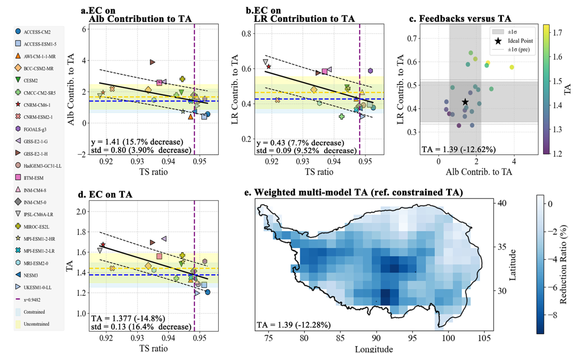
图 7｜Figure 7
图 7。
Fig. 7.
基于历史 TS 比率对 TA 施加的涌现约束（EC）。
Emergent constraints (ECs) on TA based on historical TS ratio.
EC 所用的 TS 比率参考值取自 MERRA2 再分析数据集。a-b，对反照率（Alb）反馈（a）和垂直递减率（LR）反馈（b）对 TA 贡献施加的 EC。
The TS ratio reference value used for ECs is derived from the MERRA2 reanalysis dataset. a-b, ECs applied to the contributions of albedo (Alb) feedback (a) and lapse-rate (LR) feedback (b) to TA.
反馈贡献以 W m− 2 K− 1 表示。c，模型导出的反馈贡献与 TA 之间的关系。
Feedback contributions are expressed in W m− 2 K− 1 . c, Relationships between model-derived feedback contributions and TA.
星号（★）表示由 TS 比率参考值导出的受约束参考值；应用 EC 前后的不确定性范围分别由虚线围成的区域和阴影区域表示。d，使用 TS 比率直接对 TA 施加的 EC。e，基于 d 中受约束 TA 估计的加权多模式平均 TA 的空间分布。
The star (★) denotes the constrained reference value derived from the TS ratio reference value, the uncertainty ranges before and after applying the EC are represented by the area enclosed by dashed lines and the shaded area, respectively. d, Direct EC applied to TA using the TS ratio. e, Spatial distribution of weighted multi-model mean TA based on the constrained TA estimate from d.
3.4 TA 预估中持续的海拔依赖偏差｜Persistent elevation-dependent bias
在约束前后，世纪末 TA 均表现出显著的海拔依赖性。
Both before and after the constraint, the TA at the end of the century exhibits significant elevation dependence.
从 2300 m 到超过 5000 m，TA 的幅度增至原来的 1.1–1.5 倍（Fig. 9a）。
Between 2300 m and over 5000 m, the magnitude of TA increases between 1.1 and 1.5 times (Fig. 9a).
值得注意的是，施加约束后 TA 降幅的大小也随海拔而变化（r = −0.63, P < 0.01），表明在这一海拔范围内 TA 的降幅随海拔升高而增大（Fig. 9b）。
Notably, the magnitude of the TA reduction after applying the constraint also varies with elevation (r = −0.63, P < 0.01), indicating that the reduction in TA increases with elevation over this altitude band (Fig. 9b).
为评估 TA 海拔依赖性偏差随时间的稳定性，我们基于 TS 比率与预估 TA 之间的负相关关系进行了 2015 至 2099 年的逐年约束（Fig. 10a）。
To assess the stability of the elevation-dependent bias in TA over time, we performed annual constraints from 2015 to 2099 based on the negative correlation between TS ratio and the projected TA (Fig. 10a).
采用 15 年滑动窗口（与前文一致），我们获得了 69 年受约束 TA 时间序列及相应的反馈贡献（Figs. 10, 11）。
Using a 15-year sliding window (consistent with previous sections), we obtained a 69-year time series of constrained TA and the corresponding feedback contributions (Figs. 10, 11).
结果表明，TS 比率通过反照率和垂直递减率反馈影响未来 TA 的作用在整个时间序列中保持稳定。
The results indicate that the influence of TS ratio on future TA through albedo and lapse-rate feedbacks remains stable throughout the time series.
校正 TS 比率误差后，TA 的范围由 1.44 至 1.50 降至 1.35–1.40（平均降低 18.67%），不确定性降低 13.44%（Fig. 10 b, c）。
After correcting for TS ratio errors, the range of TA decreases from 1.44 to 1.50 to 1.35–1.40 (an average decrease of 18.67%), and uncertainty is reduced by 13.44% (Fig. 10 b, c).
此外，在整个时期内，TS 比率与反照率和垂直递减率反馈均呈显著负相关（Fig. 11 a, b）。
Moreover, TS ratio shows a significant negative correlation with both albedo and lapse-rate feedbacks over the entire period (Fig. 11 a, b).
回归分析进一步显示，这两个反馈对 TA 的贡献在整个预估期内均显著（Fig. 11c）。
Regression analysis further reveals that the contributions of these two feedbacks to TA are significant throughout the forecast period (Fig. 11c).
因此，在这 69 年时间序列中，TS 比率通过反照率和垂直递减率反馈影响 TA，而模拟中普遍存在的冷偏差夸大了这些机制的贡献，导致 TA 普遍被高估。
Therefore, TS ratio influences the TA over the 69-year time series through the albedo and lapse-rate feedbacks, and the common cold bias in simulations exaggerates the contribution of these mechanisms, leading to a general overestimation of TA.
基于受约束的 TA 时间序列，采用加权平均方法（见 Methods）为不同模型赋权，从而得到受约束 TA 的空间分布（Fig. 8 c, d）。
Based on the constrained TA time series, a weighted average method (see Methods) was applied to assign weights to different models to derive the spatial distribution of the constrained TA (Fig. 8 c, d).
结果表明，受约束 TA 降幅与海拔之间存在显著正相关（r = 0.141, P < 0.01），表明 TA 的降幅随海拔升高而增大（Fig. 9d）。
The results show that, there is a significant positive correlation between the reduction in constrained TA and elevation (r = 0.141, P < 0.01), indicating that the reduction in TA increases with elevation (Fig. 9d).
反照率和垂直递减率反馈对 TA 的贡献均表现出与 TA 相似的海拔依赖性，其向下调整的幅度与海拔呈显著正相关（Fig. 9 e, f）。
Both albedo and lapse-rate feedbacks contributions exhibit a similar elevation dependence to TA, with the magnitude of their downward adjustments showing a significant positive correlation with elevation (Fig. 9 e, f).
上述分析表明，TS 比率模拟中的冷偏差不仅导致预估期间 TA 持续被高估，而且这种高估的幅度随海拔升高而增大。
The above analysis indicates that the cold bias in the TS ratio simulations not only leads to a sustained overestimation of TA during projections but also that the magnitude of this overestimation increases with elevation.
Fig. 5d 和 h 的结果进一步支持了这一机制。
This mechanism is further supported by the results in Fig. 5d and h.
高海拔地区具有较低的地表温度和更大的积雪覆盖，在增暖过程中会产生更强的大气递减率和反照率反馈，从而导致温度升高得到更大的放大。
High-altitude regions, characterized by lower surface temperatures and greater snow cover, produce stronger atmospheric lapse-rate and albedo feedbacks during warming, resulting in greater amplification of temperature increase.
因此，TS 比率模拟中的冷偏差会在较高海拔导致对 TA 更为显著的高估。
Therefore, the cold bias in TS ratio simulations leads to a more pronounced overestimation of TA at higher elevations.
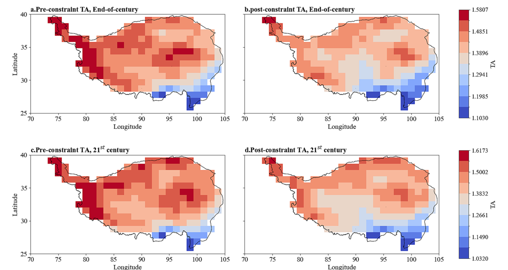
图 8｜Figure 8
图 8。
Fig. 8.
施加 EC 前后 TA 的空间分布。a-b，SSP585 情景下 2085–2099 年期间的世纪末 TA 在施加 EC 前（a）和后（b）的空间分布。c-d，2015–2099 年期间的 21 世纪平均 TA 在施加 EC 前（c）和后（d）的空间分布。
Spatial distribution of TA before and after applying the EC. a-b, Spatial distributions of end-of-century TA during 2085–2099 under the SSP585 scenario before (a) and after (b) applying the EC. c-d, Spatial distributions of 21st-century mean TA during 2015–2099 before (c) and after (d) applying the EC.
约束后的 TA 分布采用基于受约束 TA 估计的加权多模式平均方法获得。
The postconstraint TA distributions are obtained using the weighted multi-model averaging method based on the constrained TA estimates.
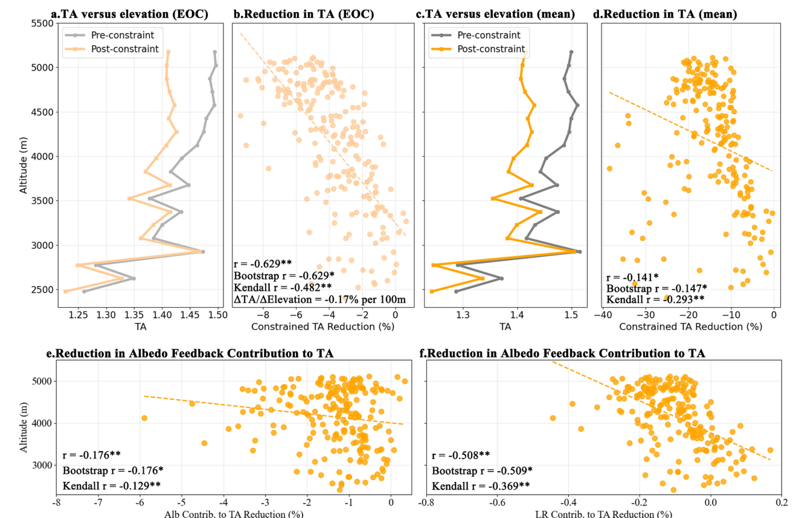
图 9｜Figure 9
图 9。
Fig. 9.
施加 EC 后 TA 的海拔依赖性及反馈调整。a，c，分别给出世纪末时期（SSP585 下的 2085–2099 年）和 69 年平均时期（2015–2099 年）TA 在施加 EC 前（灰色）和后（橙色）的海拔依赖性。b，d，分别给出世纪末和 69 年平均时期施加 EC 后 TA 降低百分比的海拔依赖性。e，f，分别给出施加 EC 后垂直递减率（LR）和反照率（Alb）反馈对 TA 贡献降低百分比的海拔依赖性。
Elevation dependence of TA and feedback adjustments after applying the EC. a, c, Elevation dependence of TA before (gray) and after (orange) applying the EC, shown for the end-of-century period (2085–2099 under SSP585) and the 69-year mean period (2015–2099), respectively. b, d, Elevation dependence of the percentage reduction in TA after applying the EC for the end-of-century and 69-year mean periods, respectively. e, f, Elevation dependence of the percentage reduction in lapse-rate (LR) and albedo (Alb) feedback contributions to TA, respectively, after applying the EC.
4. 讨论｜Discussion
尽管涌现约束将预估 TA 的不确定性降低了约 16%，但由于气候模型之间的结构差异、内部气候变率（Deser et al., 2010; Hawkins and Sutton, 2009）以及参考数据集的不确定性，仍存在残余不确定性。
Although the emergent constraint reduces the uncertainty of projected TA by approximately 16%, residual uncertainty remains due to structural differences among climate models, internal climate variability (Deser et al., 2010; Hawkins and Sutton, 2009), and uncertainties in the reference datasets.
因此，涌现约束的目标并非消除所有不确定性，而是减少由可识别的系统性模型偏差引起的部分，并提高未来预估的物理一致性（Hall et al., 2019）。
The objective of the emergent constraint is therefore not to eliminate all uncertainty, but to reduce the component arising from identifiable systematic model biases and improve the physical consistent of future projections (Hall et al., 2019).
因此，在校正历史 TP 地表温度冷偏差及其相关反馈后，受约束的 TA 应被视为一个物理上更一致的估计。
Accordingly, the constrained TA should be regarded as a more physically consistent estimate after correcting for the historical TP surface temperature cold bias and its associated feedbacks.
重要的是，我们关于 CMIP6 模型系统性高估未来 TA 的结论，不仅得到预估不确定性降低的支持，也得到稳健的 TS 比率–TA 关系（Fig. 2d）、基于物理的反馈分析（Fig. 3）及其在整个预估期内一致性的支持（Fig. 10）。
Importantly, our conclusion that CMIP6 models systematically overestimate future TA is supported not only by the reduced projection uncertainty but also by the robust TS ratio-TA relationship (Fig. 2d), physically based feedback analyses (Fig. 3) and their consistency across the projection period (Fig. 10).
未来 TA 预估的进展将需要更准确的观测和再分析参考数据集，以及识别更多基于物理的涌现约束指标。
Future progress in TA projections will require more accurate observational and reanalysis reference datasets together with the identification of additional physically based emergent constraint metrics.
整合多个具有物理意义的约束可能进一步提高未来 TA 预估的稳健性和可靠性。
Integrating multiple physically meaningful constraints may further improve the robustness and reliability of future TA projections.
从近期未来到远期未来，反照率和垂直递减率反馈对解释 TA 的解释力稳步增加，这可由决定系数的逐步上升看出（Fig. 11c）。
From the near-future to the far-future period, the explanatory power of albedo and lapse-rate feedbacks in accounting for TA increases steadily, as indicated by the progressive rise in the coefficient of determination (Fig. 11c).
内部气候变率的相对重要性取决于所考虑的时间和空间尺度，并且在短时间范围内可超过外部强迫的重要性（Mankin et al., 2020）。
The relative importance of internal climate variability depends on the temporal and spatial scales considered and can exceed that of external forcing over short-term horizons (Mankin et al., 2020).
因此，在近期未来，TA 受到内部变率的强烈调制，从而削弱了这些反馈在线性统计框架内的解释力。
Consequently, during the near-future, TA is strongly modulated by internal variability, which weakens the explanatory power of these feedbacks within a linear statistical framework.
随着分析窗口延长和外部辐射强迫增强，反馈结构变得更加稳定。
As the analysis window lengthens and external radiative forcing intensifies, the feedback structure becomes more stable.
到 21 世纪末，反照率和垂直递减率反馈的综合解释力显著增加（R2 > 0.8）。
By the end of the 21st century, the combined explanatory power of albedo and lapse-rate feedbacks increases substantially (R2 > 0.8).
由于 TS 比率主要通过这两条反馈路径影响预估 TA，TS 比率与 TA 之间的相关性也从近期未来到远期未来逐步增强（Fig. 10a）。
Because TS ratio primarily influences projected TA through these two feedback pathways, the correlation between TS ratio and TA also strengthens progressively from the nearfuture to the far-future (Fig. 10a).
与此同时，反照率反馈对 TA 的相对贡献随时间下降，并预计到世纪末将弱于垂直递减率反馈（Fig. 11c）。
Meanwhile, the relative contribution of albedo feedback to TA declines over time and is projected to become weaker than that of lapse-rate feedback by the end of the century (Fig. 11c).
鉴于模拟的反照率变化与积雪变化之间具有紧密联系（图6），这一转变主要归因于外部强迫下青藏高原积雪的持续减少；到那时，持续积雪仅限于最高海拔地区。
Given the close linkage between modeled albedo changes and snow cover variations (Fig. 6), this transition is primarily attributed to the sustained reduction of snow cover over the TP under external forcing, with persistent snow cover being confined to the highest elevations by that time.
这一反馈转变对排放情景的依赖性也值得考虑。
The dependence of this feedback transition on emission scenario also deserves consideration.
尽管本研究的主要分析基于 SSP585，SSP126 和 SSP245 下的补充分析（Fig. 12）表明，历史 TS 比率与未来 TA 之间的负关系及其相关的反照率和垂直递减率反馈路径，在不同强迫水平下仍保持物理一致性。
Although the main analyses in this study are based on SSP585, supplementary analyses under SSP126 and SSP245 (Fig. 12) indicate that the negative relationship between historical TS ratio and future TA, together with the associated albedoand lapse-ratefeedback pathways, remains physically consistent across different forcing levels.
然而，在较低排放情景下，相应的统计关系变弱，因为较弱的外部辐射强迫产生较小的受迫增暖信号以及较小的积雪覆盖和大气热结构变化，从而增加内部气候变率的相对影响，同时削弱反照率和垂直递减率反馈（Deser et al., 2010; Hawkins and Sutton, 2009）。
Nevertheless, the corresponding statistical relationships become weaker under lower-emission scenarios because weaker external radiative forcing produces a smaller forced warming signal and smaller changes in snow cover and atmospheric thermal structure, increasing the relative influence of internal climate variability while weakening both albedo and lapse-rate feedbacks (Deser et al., 2010; Hawkins and Sutton, 2009).
尽管存在这种减弱，在 SSP126 和 SSP245 下，反照率和垂直递减率反馈共同解释了 TA 模型间方差的 70% 以上（Fig. 12），支持所提出物理机制的稳健性以及 EC 框架在广泛强迫情景下的适用性。
Despite this reduction, albedo and lapserate feedbacks together explain more than 70% of the inter-model variance in TA under SSP126 and SSP245 (Fig. 12), supporting the robustness of the proposed physical mechanism and the applicability of the EC framework across a wide range of forcing scenarios.
由于在较低排放情景下积雪覆盖预计会持续更久，从反照率主导到递减率主导反馈的转变可能晚于 SSP585 情景（Fig. 11c）。
Because snow cover is expected to persist longer under lower-emission scenarios, the transition from albedo-dominated to lapse-rate-dominated feedbacks is likely to occur later than under SSP585 (Fig. 11c).
这一转变的时间和幅度是否在不同排放情景间存在系统性差异，以及在积雪大幅消融后积雪损失潜力降低是否最终会在当前线性 EC 框架之外诱发 TA 的非线性响应，仍是未来研究的重要问题。
Whether the timing and magnitude of this transition vary systematically among emission scenarios, and whether reduced snow-loss potential following substantial snow depletion could eventually induce nonlinear responses in TA beyond the current linear EC framework, remain important questions for future investigation.
值得注意的是，TP 积雪覆盖还通过陆气相互作用影响区域和大尺度气候系统，包括亚洲季风和大气环流（You et al., 2020c; Dong et al., 2024a, 2024b）。
Notably, TP snow cover also influences regional and large-scale climate systems, including the Asian monsoon and atmospheric circulation, through land-atmosphere interactions (You et al., 2020c; Dong et al., 2024a, 2024b).
因此，持续的积雪损失不仅可能改变未来 TA 的演变，还可能改变 TP 积雪覆盖更广泛的气候作用。
Therefore, continued snow loss may not only modify future TA evolution but also alter the broader climatic role of TP snow cover.
本研究采用由 MERRA2 得出的 TS 比率作为参考指标，以约束未来 TA 的幅度及关键反馈过程的贡献。
In this study, TS ratio derived from MERRA2 is adopted as the reference metric to constrain future TA magnitude and the contributions of key feedback processes.
然而，正如我们的评估（Fig. 1b-g）和以往研究所表明，MERRA2 在 TP 上可能仍存在冷偏差，这主要与观测覆盖稀疏、模型分辨率有限以及数据同化方案的不确定性有关（Han et al., 2020; Zhou et al., 2024b）。
However, MERRA2 may still contain a cold bias over the TP, as indicated by our evaluation (Fig. 1b-g) and previous studies, which is mainly associated with sparse observational coverage, limited model resolution, and uncertainties in data assimilation schemes (Han et al., 2020; Zhou et al., 2024b).
鉴于本研究识别出的 TS 比率与 TA 之间稳健的负关系，若参考数据集能更准确地表征历史 TP 和全球地表温度，则可能得到更高的 TS 比率，并进一步降低估计的 TA 幅度。
Given the robust negative relationship between TS ratio and TA identified in this study, a reference dataset with more accurate representation of historical TP and global surface temperature would likely yield a higher TS ratio and further reduce the estimated TA magnitude.
从这个意义上说，TA 的理论下限对应于由无偏表征的历史 TP 地表温度所导出的约束；但由于缺乏足够可靠的观测基准，这一下限目前尚无法定量确定。
In this sense, the theoretical lower limit of TA corresponds to the constraint derived from an unbiased representation of historical TP surface temperature, although this limit cannot yet be quantitatively determined due to the lack of a sufficiently reliable observational benchmark.
因此，未来对多源观测和再分析产品的改进可能进一步细化受约束估计。
Future improvements in multi-source observations and reanalysis products may therefore further refine the constrained estimate.
越来越多的文献从区域到大尺度视角研究了 TP 增暖（包括 TA）的影响。
A growing body of literature has investigated the impacts of TP warming, including TA, from regional to large-scale perspectives.
在区域尺度上，TP 增暖引起冰冻圈的显著变化（Barnett et al., 2005; Biskaborn et al., 2019; Huang et al., 2024; Immerzeel et al., 2010; Xu et al., 2024a），并通过改变亚洲主要河流系统的水文状况，对下游数十亿人的生计产生深远影响（Cui et al., 2023; Gu et al., 2023; Liu et al., 2025; Wang et al., 2014）。
At the regional scale, TP warming induces pronounced changes in the cryosphere (Barnett et al., 2005; Biskaborn et al., 2019; Huang et al., 2024; Immerzeel et al., 2010; Xu et al., 2024a) and by altering the hydrological regimes of major Asian river systems, exerts far-reaching influences on the livelihoods of billions of people downstream (Cui et al., 2023; Gu et al., 2023; Liu et al., 2025; Wang et al., 2014).
在大尺度环流层面，已有研究表明 TA 可以：调制南亚高压的位置，从而导致东亚极端降水的三极型分布；通过减弱垂直风切变增强西北太平洋台风强度；并影响北半球天气变率（Jia et al., 2025; Xie et al., 2025; Xu et al., 2024b）。
At the large-scale circulation level, previous studies suggest that TA can: modulate the position of the South Asian High, thereby leading to a tripolar pattern of extreme precipitation over East Asia; enhance western North Pacific typhoon intensity through reduced vertical wind shear; and influence Northern Hemisphere weather variability (Jia et al., 2025; Xie et al., 2025; Xu et al., 2024b).
在模型预估情景下，这些影响通常预计将在未来增强。
Under model-projected scenarios, these impacts are generally expected to intensify in the future.
尽管 TA 本身的发生及其相关气候影响已得到充分确立且不存在歧义，但对 TS 比率偏差的校正表明，未来 TA 的幅度可能被系统性高估，这意味着相关影响可能不像原始模型预估所暗示的那样严重。
Although the occurrence of TA itself and its associated climatic impacts are wellestablished and unequivocal, correcting the bias in the TS ratio reveals that the magnitude of future TA may be systematically overestimated, implying that the associated impacts could be less severe than suggested by raw model projections.
这一发现凸显了在未来评估 TP 增暖影响时采用更审慎且物理一致的 TA 估计的必要性。
This finding highlights the necessity of adopting more cautious and physically consistent estimates of TA in future assessments of TP warming impacts.
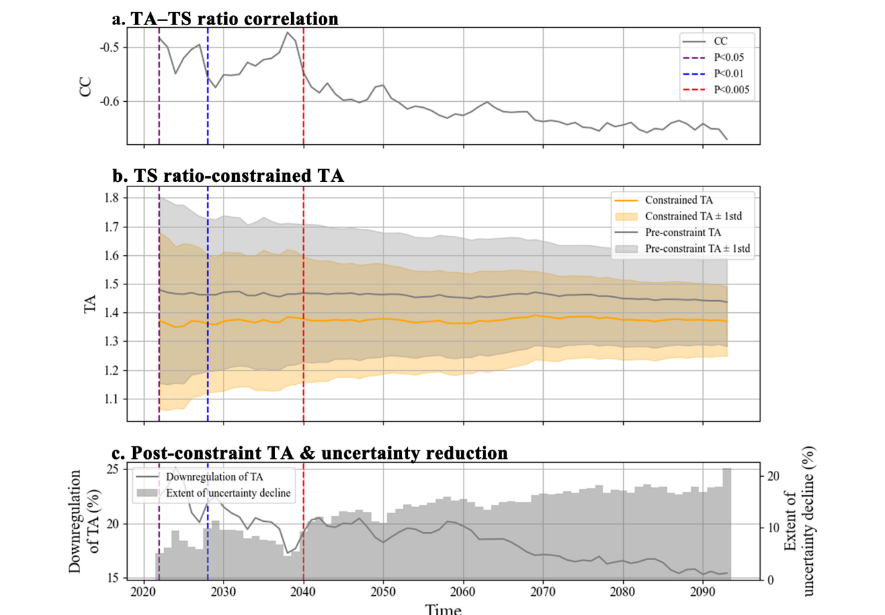
图 10｜Figure 10
图 10。
Fig. 10.
基于历史 TS 比率对 69 年 TA 时间序列施加的随时间变化的涌现约束。
Time-varying emergent constraints on the 69-year TA time series based on historical TS ratio.
69 年 TA 时间序列由 SSP585 情景下 2015–2099 年采用 15 年滑动窗口的逐年约束导出。a，在该 69 年时间序列中，模型间历史 TS 比率（1980–1994 年平均）与未来 TA 的相关系数及其统计显著性的时间演变。
The 69-year TA time series is derived from annual constraints using a 15-year sliding window from 2015 to 2099 under the SSP585 scenario. a, Temporal evolution of the inter-model correlation coefficients and their statistical significance between historical TS ratio (1980–1994 mean) and future TA across the 69-year time series.
紫色、红色和蓝色虚线分别表示相关性自这些年份起在 P < 0.05、P < 0.01 和 P < 0.005 水平上达到统计显著。b，基于 TS 比率约束施加 EC 前后的 TA 时间序列。c，受约束 TA 降低幅度（左轴）和模型间 TA 不确定性降低幅度（右轴）的时间演变。
Purple, red, and blue dashed lines indicate the years from which the correlations become statistically significant at the P < 0.05, P < 0.01, and P < 0.005 levels, respectively. b, TA time series before and after applying the EC based on the TS ratio constraint. c, Temporal evolution of the reduction in constrained TA (left axis) and the reduction in inter-model TA uncertainty (right axis).
（有关本图图例中颜色引用的说明，请参阅本文的网络版。）
(For interpretation of the references to colour in this figure legend, the reader is referred to the web version of this article.)
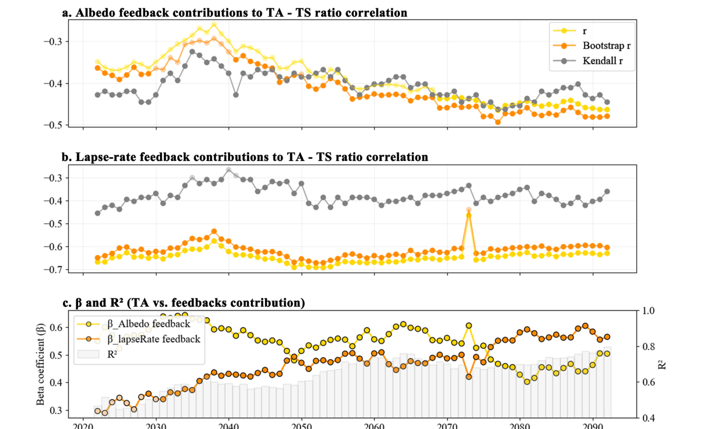
图 11｜Figure 11
图 11。
Fig. 11.
反照率和垂直递减率反馈对 TA 贡献的时间演变及其与历史 TS 比率的关系。
Temporal evolution of albedo and lapse-rate feedback contributions to TA and their relationships with historical TS ratio.
69 年时间序列由 SSP585 情景下 2015–2099 年采用 15 年滑动窗口的逐年约束导出。a-b，模型间历史 TS 比率与反照率反馈（a）和垂直递减率反馈（b）对 TA 贡献之间相关系数的时间演变。c，TA 对反照率和垂直递减率反馈贡献进行逐年多元线性回归所得标准化回归系数（β）和决定系数（R2）的时间演变。
The 69-year time series is derived from annual constraints using a 15-year sliding window from 2015 to 2099 under the SSP585 scenario. a-b, Temporal evolution of the inter-model correlation coefficients between historical TS ratio and the contributions of albedo feedback (a) and lapse-rate feedback (b) to TA. c, Temporal evolution of standardized regression coefficients (β) and coefficients of determination (R2 ) from annual multiple linear regressions of TA against albedo and lapse-rate feedback contributions.
依据 P < 0.05 阈值，深色点和浅色点分别表示统计显著和不显著的结果。
Dark and light points indicate statistically significant and non-significant results, respectively, based on the P < 0.05 threshold.
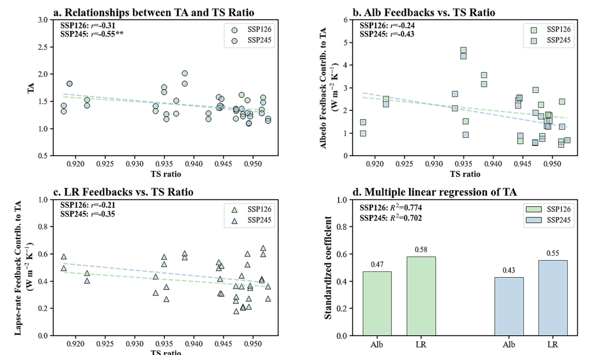
图 12｜Figure 12
图 12。
Fig. 12.
TP 上 SSP126 和 SSP245 情景下 TS 比率与 TA 及反馈贡献之间的关系。
Relationships between TS ratio and TA and feedback contributions under SSP126 and SSP245 scenarios over the TP.
结果展示 SSP126 和 SSP245 情景下 21 世纪末时期（2085–2099 年）的情况，浅绿色和浅蓝色分别表示 SSP126 和 SSP245。a，SSP126 和 SSP245 情景下 CMIP6 模型间 TA 与历史 TS 比率之间的关系。b–c，模型间反照率（Alb）反馈（b）和垂直递减率（LR）反馈（c）对 TA 的贡献与历史 TS 比率之间的关系。
Results are shown for the late-21stcentury period (2085–2099) under the SSP126 and SSP245 scenarios, with light green and light blue colors representing SSP126 and SSP245, respectively. a, Relationships between TA and historical TS ratio across CMIP6 models under SSP126 and SSP245 scenarios. b–c, Relationships between the contributions of albedo (Alb) feedback (b) and lapse-rate (LR) feedback (c) to TA and historical TS ratio across models.
面板 a–c 左上角给出了 Pearson 相关系数（r）。d，SSP126 和 SSP245 情景下 Alb 和 LR 反馈对 TA 贡献的多元线性回归系数；y 轴表示标准化回归系数。
Pearson correlation coefficients (r) are shown in the upper-left corner of panels a–c. d, Multiple linear regression coefficients of Alb and LR feedback contributions to TA under SSP126 and SSP245 scenarios; the y-axis represents standardized regression coefficients.
回归模型的决定系数（R2）显示在面板 d 的左上角。
The coefficient of determination (R2 ) of the regression model is shown in the upper-left corner of panel d.
反馈贡献以 W m− 2 K− 1 表示，表示单位温度变化对应的辐射通量变化。
Feedback contributions are expressed in W m− 2 K− 1 , representing changes in radiative flux per unit temperature change.
（有关本图图例中颜色引用的说明，请参阅本文的网络版。）
(For interpretation of the references to colour in this figure legend, the reader is referred to the web version of this article.)
5. 结论｜Conclusion
本研究表明，CMIP6模式系统性高估了未来TA的幅度。
This study demonstrates that CMIP6 models systematically overestimate the magnitude of future TA.
得出如下三项主要结论。a) 在各模式之间，青藏高原（TP）的TS ratio与21世纪末预测的TA幅度呈显著负相关。
Three main conclusions are drawn as follows. a) Across models, TS ratio over the TP exhibits a significant negative correlation with the projected TA magnitude by the end of the 21st century.
鉴于历史模拟中普遍存在的冷偏差，这一关系意味着多模式平均中的未来TA被系统性高估。b) 基于ITA指标的分析进一步表明，冷偏差夸大了反照率和垂直递减率反馈对TA的正贡献，从而抬高了预测的TA幅度。
Given the widespread cold bias in historical simulations, this relationship implies that the future TA is systematically overestimated in the multi-model mean. b) Analyses based on the ITA metric further indicate that the cold bias exaggerates the positive contributions of albedo and lapse-rate feedbacks to TA, thereby inflating the projected TA magnitude.
分别对两类反馈施加约束所得的TA估计，与直接约束TA所得的估计高度一致，这为该机制提供了佐证。c) 施加约束后，预测的TA幅度降低约14.8%（至1.38），相应不确定性降低16.4%。
This mechanism is corroborated by the close agreement between TA estimates obtained via constraints applied separately to the two feedbacks and those derived from directly constraining TA. c) After applying the constraints, the projected TA magnitude is reduced by approximately 14.8% (1.38), and the associated uncertainty decreases by 16.4%.
将分析扩展至69年时间序列后，发现TA存在稳健的随海拔变化的高估。
Extending the analysis to a 69-year time series reveals a robust elevation-dependent overestimation of TA.
这一格局同样可归因于TS ratio的系统性冷偏差；该偏差在较高海拔处不成比例地增强反照率和垂直递减率反馈对TA的正贡献，导致TA高估更为显著。
This pattern is similarly attributable to the systematic cold bias in TS ratio, which disproportionately enhances the positive contributions of albedo and lapserate feedbacks at higher elevations, leading to more pronounced TA overestimation.
此外，从近期未来到远期未来，随着外部强迫增强、内部变率减弱，反照率和垂直递减率反馈的解释力提高；伴随着持续的积雪损失，增暖放大由反照率主导转向由垂直递减率主导。
Additionally, from the near future to the far future, the explanatory power of albedo and lapse-rate feedbacks increases as external forcing strengthens and internal variability weakens, accompanied by a shift from albedo-dominated to lapse-rate-dominated amplification associated with sustained snow cover loss.
这一演变表明，持续的积雪消融可能引起控制TA的反馈机制发生系统性转变。
This evolution suggests that continued snow depletion may induce a systematic shift in the feedback regime governing TA.
鉴于区域和大尺度气候响应的幅度随青藏高原增暖强度而变化，本文识别出的TA系统性高估意味着先前预测的气候影响也可能被夸大。
Given that the magnitude of regional and large-scale climatic responses scales with the strength of Tibetan Plateau warming, the systematic overestimation of TA identified here implies that previously projected climatic impacts may likewise be overstated.
然而，参照数据集的剩余不确定性凸显出，有必要改进观测约束，以进一步优化未来预测。
Nevertheless, residual uncertainties in reference datasets underscore the need for improved observational constraints to further refine future projections.
作者贡献｜CRediT authorship contribution statement
Yu Deng：撰写—初稿；可视化；研究；正式分析；数据整理。
Yu Deng: Writing – original draft, Visualization, Investigation, Formal analysis, Data curation.
Qinglong You：撰写—审阅与编辑；项目管理；经费获取；概念化。
Qinglong You: Writing – review & editing, Project administration, Funding acquisition, Conceptualization.
Fangying Wu：撰写—审阅与编辑；资源；方法学。
Fangying Wu: Writing – review & editing, Resources, Methodology.
Wenyu Zhou：撰写—审阅与编辑；验证；方法学；数据整理。
Wenyu Zhou: Writing – review & editing, Validation, Methodology, Data curation.
Zhiyuan Cong：撰写—审阅与编辑；监督；资源。
Zhiyuan Cong: Writing – review & editing, Supervision, Resources.
Zhiyan Zuo：撰写—审阅与编辑；监督；资源。
Zhiyan Zuo: Writing – review & editing, Supervision, Resources.
Haijun Deng：撰写—审阅与编辑；监督。
Haijun Deng: Writing – review & editing, Supervision.
Nick Pepin：撰写—审阅与编辑；监督。
Nick Pepin: Writing – review & editing, Supervision.
Hans W. Chen：撰写—审阅与编辑、监督。
Hans W. Chen: Writing – review & editing, Supervision.
Deliang Chen：撰写—审阅与编辑；资源；项目管理。
Deliang Chen: Writing – review & editing, Resources, Project administration.
Renhe Zhang：撰写—审阅与编辑；资源；项目管理。
Renhe Zhang: Writing – review & editing, Resources, Project administration.
代码可用性｜Code availability
辐射核方法及辐射核（Pendergrass et al., 2018）的代码可从 https://github.com/apendergrass/cam5-kernels 获取。
The code for the radiative-kernel method and radiative kernels (Pendergrass et al., 2018) is available from https://github.com/apendergrass/cam5-kernels.
利益冲突声明｜Declaration of competing interest
作者声明，不存在可能被认为影响本文所报告工作的已知竞争性经济利益或个人关系。
The authors declare that they have no known competing financial interests or personal relationships that could have appeared to influence the work reported in this paper.
致谢｜Acknowledgments
我们感谢编辑和审稿人提出的宝贵意见和建议。
We appreciate the valuable comments and suggestions provided by the editors and reviewers.
Q. L.Y 获得国家重点研发计划（项目号：2022YFF0801703）、第二次青藏高原科学考察研究（STEP）计划（项目号：2019QZKK0105）以及上海市基础研究特区计划—复旦大学（项目号：22TQ007）的资助。
Q. L.Y was supported by the National Key Research and Development Program of China under award no. 2022YFF0801703, the Second Tibetan Plateau Scientific Expedition and Research (STEP) program (grant 2019QZKK0105) and the Shanghai Pilot Program for Basic Research-Fudan University by grant no. 22TQ007.
D.L.C获得清华大学资助（项目编号100008001）。
D.L.C was supported by Tsinghua University by grant no. 100008001.
数据可用性｜Data availability
CMIP6输出数据（Eyring et al., 2016）可从https://aims2.llnl.gov/search/cmip6/获取。
The CMIP6 outputs (Eyring et al., 2016) are available at https://aims2.llnl.gov/search/cmip6/.
对于再分析数据集，ERA5-Land 再分析数据集（Muñoz-Sabater et al., 2021）可从 https://cds.climate.copernicus.eu/datasets/ 获取。
For the reanalysis datasets, ERA5-Land reanalysis dataset (Muñoz-Sabater et al., 2021) is available at https://cds.climate.copernicus.eu/datasets/.
MERRA2（Gelaro et al., 2017）和GLDAS2.2（Rodell et al., 2004）再分析数据集可从http://disc.gsfc.nasa.gov获取。
MERRA2 (Gelaro et al., 2017) and GLDAS2.2 (Rodell et al., 2004) reanalysis dataset is available at http://disc.gsfc.nasa.gov.
2 × CO₂ 辐射强迫的空间分布（Huang et al., 2016）可从 https://data.mendeley.com/datasets/3drx8fmmz9/1 获取。
The spatial pattern of 2 × CO₂ radiative forcing (Huang et al., 2016) is available at https://data.mendeley.com/datasets/3drx8fmmz9/1.
注：出版物书目条目按任务范围未译；没有发现可单独获取的补充材料。文中所谓 supplementary analyses 指正文 Figure 12 所示的 SSP126/SSP245 敏感性分析。